Week 33 - August 10 to 16, 2026
What colleagues are talking about this week?
Internal Updates
All 4
Tools & Releases
Learning & Curriculum
Best Practices
#ai-studio-updates
#genai_engineering
#ai-design-curriculum
#mp-ai-engineering
AI Studio Can Now Evaluate Agents and AI Inference Configs in One Flow
What is the update: AI Studio now lets teams evaluate published agents and GenAI inference configs with the same side-by-side metrics flow previously reserved for prompts.
Why it's valuable for UXers: UX teams prototyping AI products can review the behavior of the actual agent experience, not just the prompt underneath it, before they ship or scale experiments.
Agent Fabric Success Stories Turn Team Experiments into Reusable Playbooks
What is the update: Agent Fabric launched a success-stories page and opened with a documented case showing Profiles compressing a support workflow from four hours to fifteen minutes.
Why it's valuable for UXers: Design technologists and UX ops leads get an internal pattern for turning one person's prompt craft into a shared, reviewable team workflow with measurable impact.
AI Design Curriculum Publishes Session 9 and 10 Recordings
What is the update: The curriculum team released the final Session 9 and Session 10 recording folders, bundling talks on rapid experimentation, Figma Config learnings, design-team agents, and Claude plus CMUX in Figma.
Why it's valuable for UXers: Designers and researchers get a reusable internal library of applied workflows they can watch, copy, and discuss without waiting for the next live session.
Marketplace AI Meetup Shares AIAP Skills Recording and Slides
What is the update: The Marketplace AI meetup published its recording plus slides for Beacon and the AIAP Skills talk on going from idea to production in days, not weeks.
Why it's valuable for UXers: UX engineers and prototype-heavy designers get a replayable internal reference on how reusable skills can shorten the path from exploratory workflow to production-ready agent behavior.
External Updates
Top picks and industry news
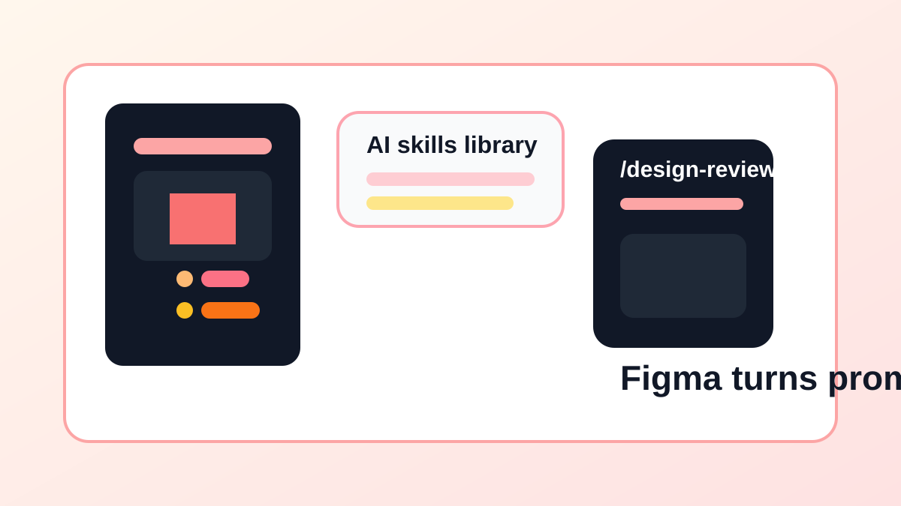
Top pick · 1Figma · August 13
Figma Lets Teams Discover, Create, and Publish Agent Skills in the Community
What is the update: Figma added an AI skills library in Community, lets the Figma agent generate new skills from file context, and supports publishing those reusable commands for others to remix.
Why it’s valuable for UXers: Design teams can turn prompt craft into shared, inspectable workflow assets instead of keeping useful agent behavior trapped in one person’s chat history.
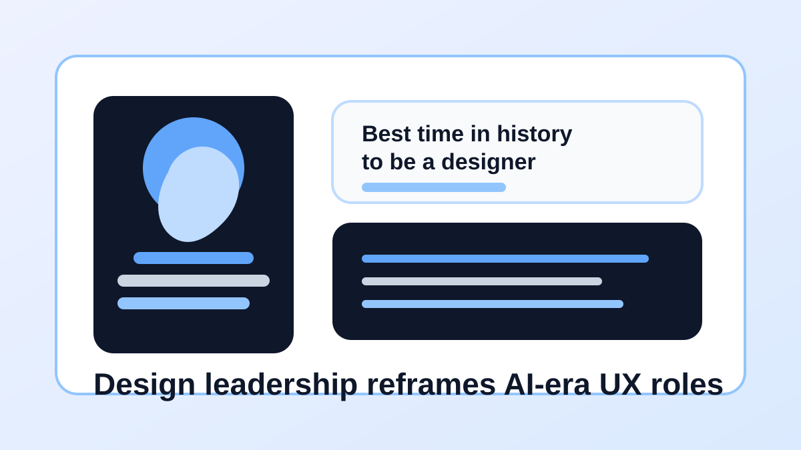
Top pick · 2Lenny's Newsletter · August 16
OpenAI's Head of Design Argues AI Expands What Strong Designers Can Own
What is the update: Ian Silber describes how AI is collapsing the distance between product ideas and working prototypes, which lets designers move from critique and handoff toward direct making, testing, and shipping.
Why it’s valuable for UXers: It is a sharp framing piece for teams redefining design roles, because it makes the tradeoff concrete: fewer permission bottlenecks for strong designer-builders, but less cover for weak process without execution.
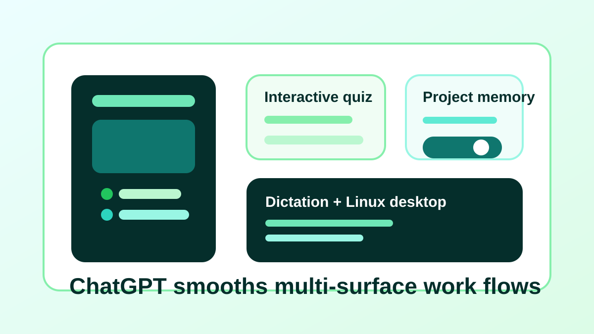
Top pick · 3OpenAI · August 14
ChatGPT App Updates Bring Quizzes, Project Memory Controls, and Linux Desktop Preview
What is the update: OpenAI added interactive quizzes, editable project memory settings, smoother dictation flow, and a Linux desktop public preview across the latest ChatGPT app experience updates.
Why it’s valuable for UXers: These changes matter to UX teams because learning flows, memory boundaries, voice input, and cross-device continuity all shape how AI copilots fit into real research, writing, and prototyping work.
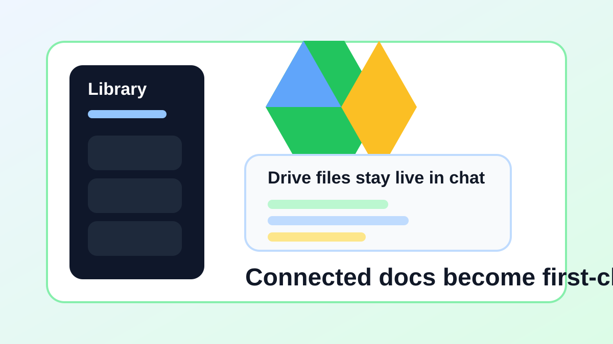
OpenAI · August 13
ChatGPT Library Now Surfaces Connected Google Drive Files
What is the update: OpenAI added Google Drive to Library so connected Docs, Sheets, Slides, and folders can be browsed, attached, and kept open beside a conversation without re-uploading files.
Why it’s valuable for UXers: Research and design-review workflows become more continuous because source documents stay live, navigable, and easier to reference while an agent drafts or analyzes.
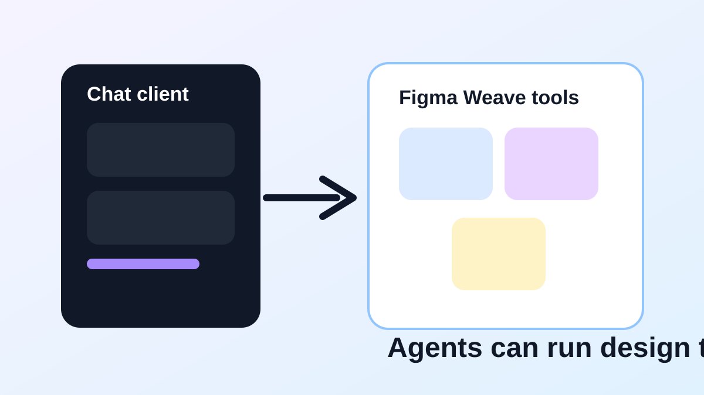
Top pick · 3Figma · August 11
Figma MCP Can Now Run Weave Tools from ChatGPT, Claude, and Cursor
What is the update: Figma expanded its MCP server so external agents can discover and run Figma Weave tools directly from the conversation, returning results without switching apps.
Why it’s valuable for UXers: Teams can keep prompts, brand context, and tool execution in one loop, which makes multi-step prototyping workflows easier to inspect and reuse.
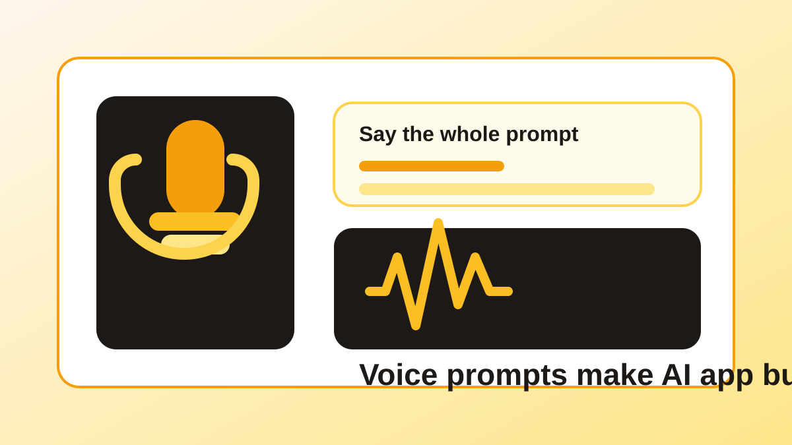
Bolt · August 13
Bolt Adds Dictation So Builders Can Speak Full Prompts Instead of Typing Them
What is the update: Bolt.new launched dictation in the prompt box, letting builders talk through a richer app request and turn spoken detail into build instructions.
Why it’s valuable for UXers: Voice input lowers the friction of describing edge cases, flows, and domain nuance, which is useful when designers are using AI builders to sketch concepts faster than they can type them cleanly.
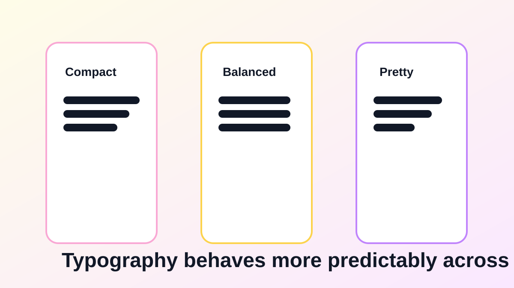
Figma · August 14
Figma Adds Better Responsive Text Wrapping for Slides, Sites, and Buzz
What is the update: Figma introduced Balance and Pretty text-wrap options so headlines and paragraphs can distribute more gracefully across lines and screen sizes.
Why it’s valuable for UXers: Designers can preserve readability and visual rhythm across responsive layouts with less manual copy tuning, especially in presentation and marketing surfaces.
Internal Updates
All 10
Tools & Releases
Learning & Curriculum
Best Practices
#dev-china
#mp-ai-engineering
#ai-for-ux
#ai-for-ux
#genai_engineering
#genai_engineering
#china-ai-sdlc
#ai-design-curriculum
#fintech-partner-ux
#aitp-experiment-communications
AI Agent Skill Telemetry Moves from Installs to Real Usage
What is the update: A self-service telemetry option now lets skill owners track real invocations with a one-line addition to a skill definition, supported by an interim Grafana dashboard.
Why it's valuable for UXers: UX teams maintaining prompts and skills can evaluate actual adoption and iterate from observed use instead of treating installation counts as success.
Architecture Compass Turns Decision Trees into Guided Recommendations
What is the update: The new architecture-compass skill converts internal Architecture Decision Trees into context-aware recommendations with reasoning and trade-offs surfaced in the agent workflow.
Why it's valuable for UXers: UX engineers and design technologists can test feasible architecture directions earlier while keeping the final decision visible and human-owned.
Figma Dev Mode Survey and AI Credit Guidance Need Designer Input
What is the update: The UX community shared a Dev Mode usage survey and directed heavy Figma AI users to the active discussion about AI-credit allowances.
Why it's valuable for UXers: Designers can shape tooling decisions with evidence from real handoff and prototyping work, while checking whether their current AI usage is sustainable.
UserTesting Secure Hosting Offers a Workaround for HTML Prototypes
What is the update: A team discussion identified UserTesting secure prototype hosting as an alternative for sharing HTML prototypes when external Vercel hosting is unsuitable.
Why it's valuable for UXers: Researchers can test richer coded prototypes with participants while using a hosting path designed for controlled research access.
Emerging Agent-Plugin Standard Starts a Useful Interoperability Debate
What is the update: A proposed agent-plugin standard triggered discussion about shared skill and MCP packaging, current gaps around rules and hooks, and possible alignment with Fabric profiles.
Why it's valuable for UXers: UX tool builders should treat portability as an emerging constraint and avoid assuming today’s agent configuration will transfer cleanly across platforms.
Fabric App Beta Improves Setup, Updates, and Workspace Reliability
What is the update: Fabric App beta 0.0.22 began rolling out with a Windows alpha, clearer privilege requests, simpler settings, and more reliable MCP connectivity.
Why it's valuable for UXers: Design technologists get a smoother, more predictable local environment for agent-assisted prototyping across devices and concurrent workspaces.
China AI-SDLC Forum Publishes Cross-Team Cases and Context-Building Notes
What is the update: The first China AI-SDLC forum published cross-track cases, meeting notes, and an early shared direction for context building across ARB, TPI, and Privacy.
Why it's valuable for UXers: China and APAC UX teams can reuse concrete examples and align research, specification, and quality practices around shared AI-ready context.
AI+Design Session Shares Five Applied Workflows Across Product and UX
What is the update: The tenth AI+Design community session brought together applied cases spanning experiments, research discussions, design agents, Config learnings, and Claude-assisted Figma work.
Why it's valuable for UXers: UXers get a compact cross-discipline set of real workflows to adapt, plus recordings for people who could not attend live.
AI Reconciliation UX Bash Opens a Partner Tool for Pre-Launch Review
What is the update: The partner-payments team opened its payout-reconciliation AI experience for a structured UX bash ahead of a limited partner launch.
Why it's valuable for UXers: UXers can shape both immediate launch quality and the longer-term role of AI across the payout journey through a live UI, designs, and journey map.
Personalization Experiment Adds Consent and Control for AI Memories
What is the update: A Companion personalization experiment introduced explicit consent, visibility, and deletion controls for AI memories, then paused because of tracking issues pending a fix.
Why it's valuable for UXers: The work demonstrates a concrete trust pattern for AI personalization and treats instrumentation quality as part of launch readiness.
External Updates
Top picks and industry news
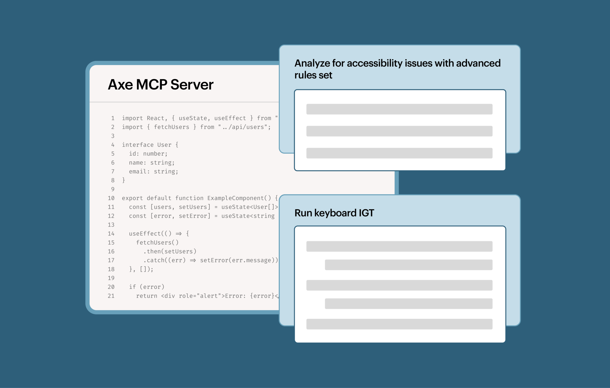
Top pick · 1Deque · August 5
Axe MCP Server Expands Automated Accessibility Coverage
What is the update: Deque added keyboard-guided tests, advanced rules, authenticated-flow testing, OAuth setup, scoped scans, and batch remediation to Axe MCP Server.
Why it’s valuable for UXers: Accessibility can remain inside AI-assisted development, helping UX and engineering teams catch complex problems before a separate late-stage audit.
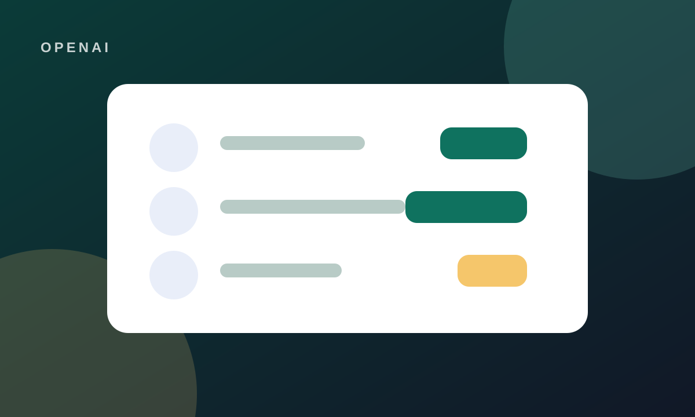
Top pick · 2Figma · August 5
Figma Adds Per-User AI Credit Limits and Request Flows
What is the update: Figma introduced full, custom-limit, and no-access AI credit levels plus an in-product request flow when a user reaches a limit.
Why it’s valuable for UXers: Design leaders can govern cost without applying one blunt cap to everyone, while heavy prototype users gain a visible escalation path.
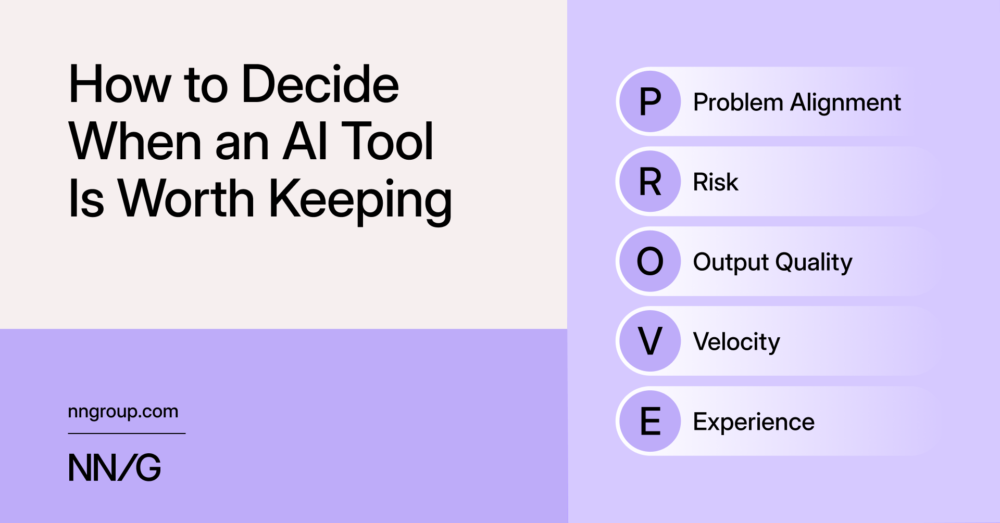
Top pick · 3Nielsen Norman Group · August 7
The PROVE Framework Tests Whether an AI Tool Is Worth Keeping
What is the update: NN/g introduced a lightweight framework that evaluates one AI tool against one task and ends with a provisional, evidence-backed adoption decision.
Why it’s valuable for UXers: UX teams can replace vague pressure to “use AI” with a repeatable test of performance, risk, outcome quality, value, and evaluation.
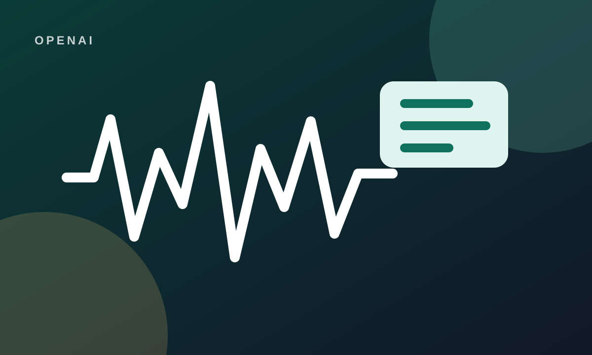
OpenAI · August 7
ChatGPT Voice Can Work with Uploaded Files and Project Context
What is the update: GPT-Live in ChatGPT Voice now supports file uploads and can operate inside Projects using recent chats, sources, and project instructions.
Why it’s valuable for UXers: Voice-interface prototypes can now be tested against real project material, making spoken research, review, and accessibility workflows more representative.
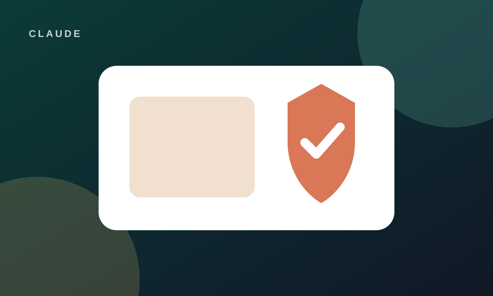
Anthropic / Claude · August 6
Claude Adds Enterprise Security Scanning for Skills and Plugins
What is the update: Enterprise administrators can enable beta scanning that automatically checks third-party skills and plugins for malicious content when uploaded or edited.
Why it’s valuable for UXers: Teams can explore reusable AI workflows with a clearer governance layer, reducing the hidden trust burden placed on individual designers and researchers.
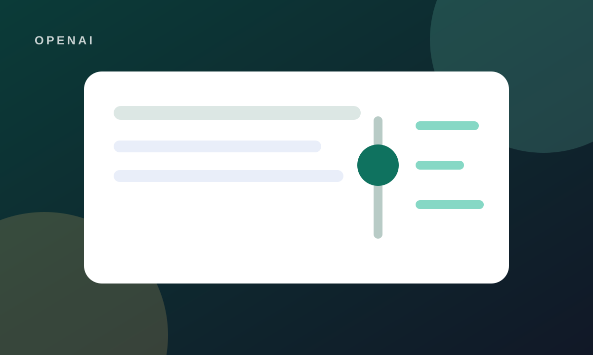
OpenAI · August 6
GPT-5.6 Sol Adds More Focused Answers and a Thinking Slider
What is the update: Plus and Pro users received an updated GPT-5.6 Sol with stronger factual reliability, tighter answers, and a slider controlling how much reasoning effort ChatGPT uses.
Why it’s valuable for UXers: Designers evaluating AI assistance gain a visible control for balancing speed and depth, but should test whether users understand what that control changes.
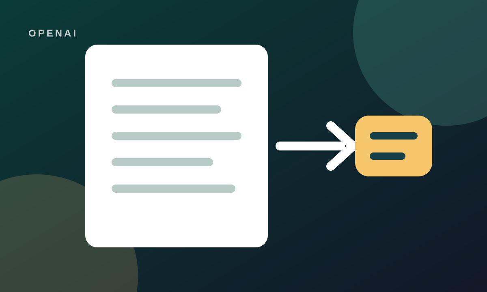
OpenAI · August 4
Large Pasted Text Now Becomes an Attachment Across ChatGPT Plans
What is the update: Pastes longer than 10,000 characters are converted into attachments, keeping the composer compact and protecting more of the conversation context window.
Why it’s valuable for UXers: Research and content workflows get a cleaner input state, but teams should make the attachment transformation visible so users understand where their material went.
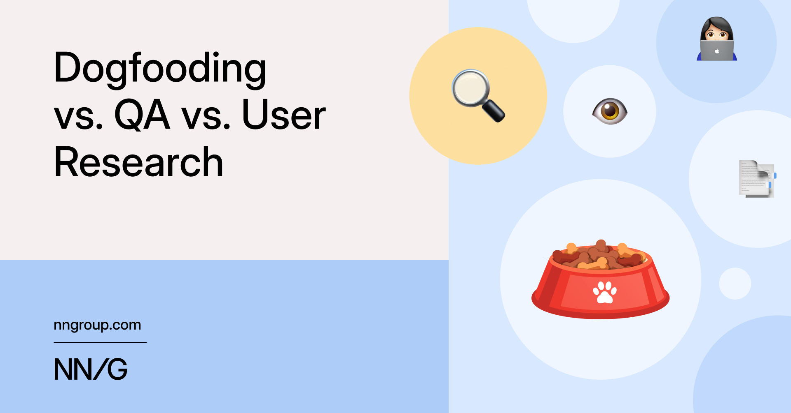
Nielsen Norman Group · August 7
Dogfooding Helps Reliability but Cannot Replace User Research
What is the update: NN/g separated employee dogfooding from structured QA and representative user research, especially for probabilistic AI products.
Why it’s valuable for UXers: UX teams can use internal testing to expose broken flows and reliability issues without mistaking insider familiarity for evidence of user comprehension.
Lenny's Newsletter · August 4
Career Emergence Offers an Alternative to the Twenty-Year Plan
What is the update: Molly Graham proposes using personal principles, energy, and the next best decision instead of forcing a fixed long-term career destination.
Why it’s valuable for UXers: UX professionals navigating rapid AI-driven role change can use explicit principles as a steadier decision framework than predicting a job title years ahead.
Internal Updates
All 6
Tools & Releases
Learning & Curriculum
Best Practices
#genai_engineering
#genai_engineering
#uxw-genai
#china-ai-sdlc
#mp-ai-engineering
#ai-for-ux
AIAP Skills Turn the GenAI Lifecycle into a Guided Workflow
What is the update: A new AIAP skill bundle packages the path from design and implementation through verification, publication, evaluation, optimisation, and observation for Claude Code and Codex.
Why it's valuable for UXers: UXers can use a repeatable human-in-the-loop workflow while remaining the decision-maker at each stage.
Agent Foundry Releases a Reusable Core Skillset
What is the update: Agent Foundry published reusable skills for Plan Canvas, Session Bookmarks, Work Archive, Agent Evolution, and Skill Polisher.
Why it's valuable for UXers: Design and product teams gain durable planning, traceable project history, and a clearer improvement loop for agentic prototypes.
AI Trip Support Copy Experiment Ships the Winning Variant
What is the update: An experiment removed human-support escalation copy and directed more Help Centre traffic to AI Trip Support without harming customer-service metrics; the winning version is now fully on.
Why it's valuable for UXers: It is direct evidence that content design can increase AI adoption while protecting downstream service outcomes.
China AI SDLC Kickoff Publishes Recording and Working Materials
What is the update: The China AI SDLC kickoff shared its recording, meeting summary, and slides to establish a common starting point for the workstream.
Why it's valuable for UXers: UX and engineering teams can align around the same artifacts and reuse the material for local enablement.
Marketplace AI Meetup Shares Agentic SDLC Recording and Slides
What is the update: The Marketplace AI meetup published a recording and decks on meeting GenAI halfway and using an agentic SDLC for product-improvement experiments.
Why it's valuable for UXers: Teams get concrete reference material for balancing human judgment with increasingly autonomous experiment workflows.
Figma Editing Thread Finds a Working Claude and CMUX Workflow
What is the update: A question about editable Figma access led the community to a CMUX and Figma Plugin API workaround, with two colleagues confirming that the workflow works.
Why it's valuable for UXers: The approach can reduce repetitive Figma setup and content changes while the official editable Figma MCP path remains unresolved.
External Updates
Top picks and industry news
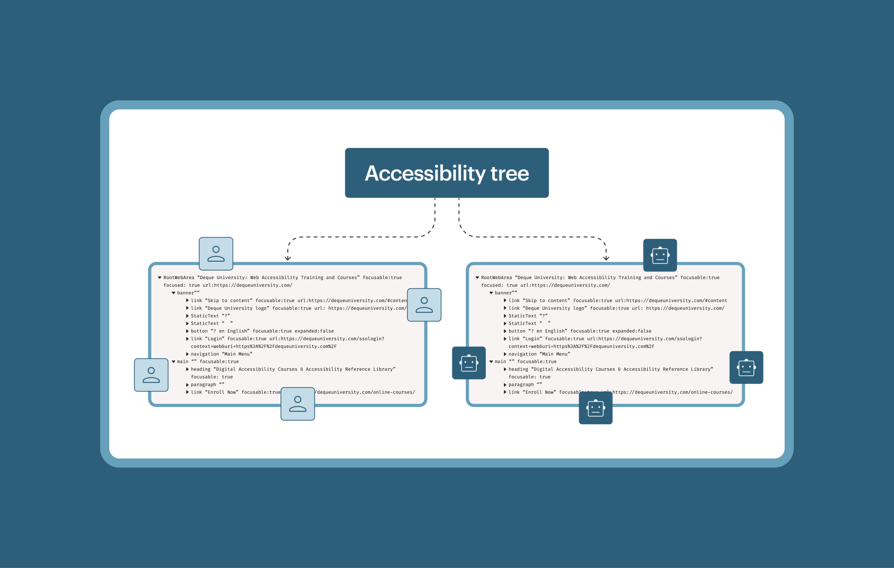
Top pick · 1Deque · July 29
Accessibility Becomes Foundational Infrastructure for Agentic AI
What is the update: Deque explained that browsing agents increasingly depend on the same accessibility tree used by assistive technologies, including semantic HTML, labels, roles, and stable interaction structures.
Why it’s valuable for UXers: UX specifications should define meaningful structure, names, states, and recovery paths from the start because accessibility now supports both people and AI agents.
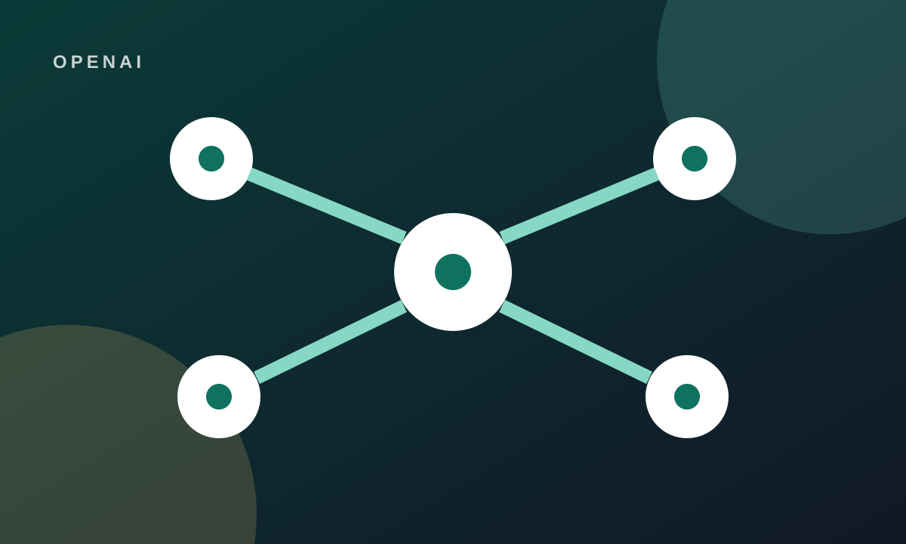
Top pick · 2OpenAI · July 27
OpenAI Research Shows AI Expanding Work Across Role Boundaries
What is the update: OpenAI reported that 43.5% of occupation-specific work messages involved tasks associated with another occupation, rising to 75% for designers.
Why it’s valuable for UXers: UX leaders can use the finding as a signal to design team boundaries and workflows around capabilities rather than fixed job-title silos.
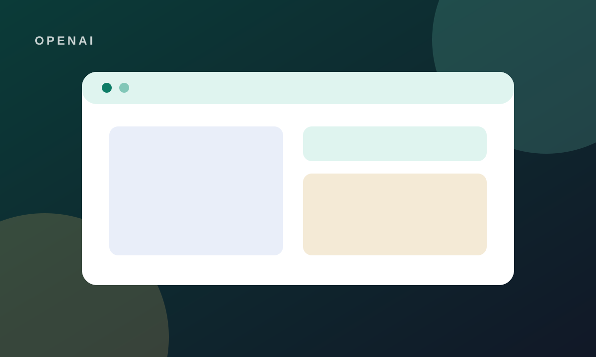
Top pick · 3OpenAI · July 30
ChatGPT Desktop Adds Faster Browsing, Multi-Repository Review, and Image Editing
What is the update: The desktop app added browser-history search and page context, multi-repository diff review, and a focused image-editing canvas with targeted comments.
Why it’s valuable for UXers: UX technologists can move between research, implementation review, and visual iteration with less context switching while retaining visible control over edits.
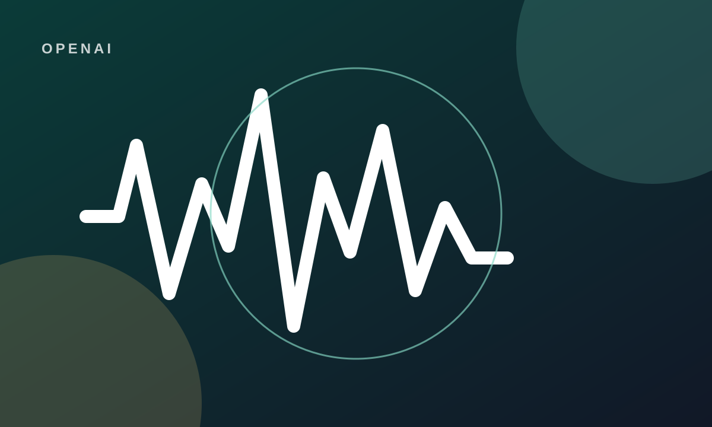
OpenAI · July 28
GPT Transcribe and GPT Live Transcribe Expand Voice-Interface Building Blocks
What is the update: OpenAI released a file-transcription model and a low-latency streaming transcription model with keyword hints, contextual guidance, and multilingual expectations.
Why it’s valuable for UXers: Teams designing voice, accessibility, research-capture, or live-assistance experiences gain clearer choices for final accuracy versus real-time responsiveness.
Nielsen Norman Group · July 31
No New Name Has Replaced “UX”
What is the update: A survey of 604 technology and design professionals found that UX remains the most widely recognized umbrella term, while proposed alternatives remain fragmented.
Why it’s valuable for UXers: As AI blurs traditional role boundaries, UX leaders have evidence to focus on communicating outcomes and risks instead of spending energy renaming the discipline.
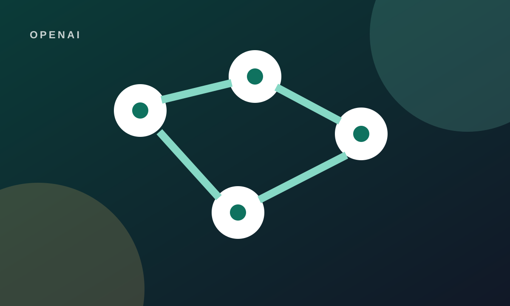
OpenAI · July 29
ChatGPT for Academic Researchers Combines Model Access with Guided Support
What is the update: OpenAI opened complimentary dedicated workspaces, frontier-model access, expanded research tools, training, and hands-on support for eligible research teams.
Why it’s valuable for UXers: The programme treats adoption as a service journey—combining workspace context, enablement, collaboration, and explicit human control rather than providing model access alone.
Nielsen Norman Group · July 27
Three Steps Help Scope Broad Research Studies Before They Sprawl
What is the update: NN/g published a concise method for connecting broad research questions to timelines, research efficiency, and useful outputs.
Why it’s valuable for UXers: UX researchers can use the framework before adding AI synthesis or automation, ensuring faster tooling does not accelerate an unfocused study.
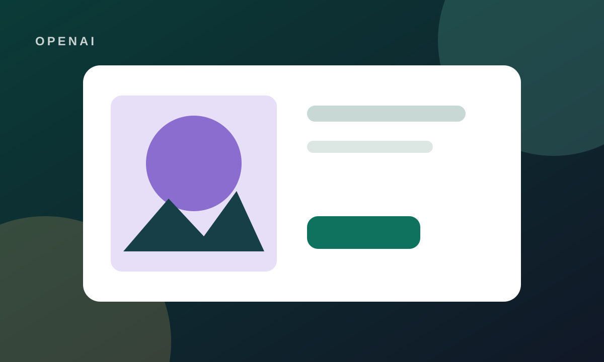
OpenAI · July 31
OpenAI Sets an August Retirement Date for the DALL·E GPT
What is the update: The official DALL·E GPT will retire on August 30, with users directed to save important outputs and continue creation through ChatGPT Images.
Why it’s valuable for UXers: Design teams using the GPT in creative workflows have a clear migration moment and should preserve assets, prompts, and team guidance before the cutoff.
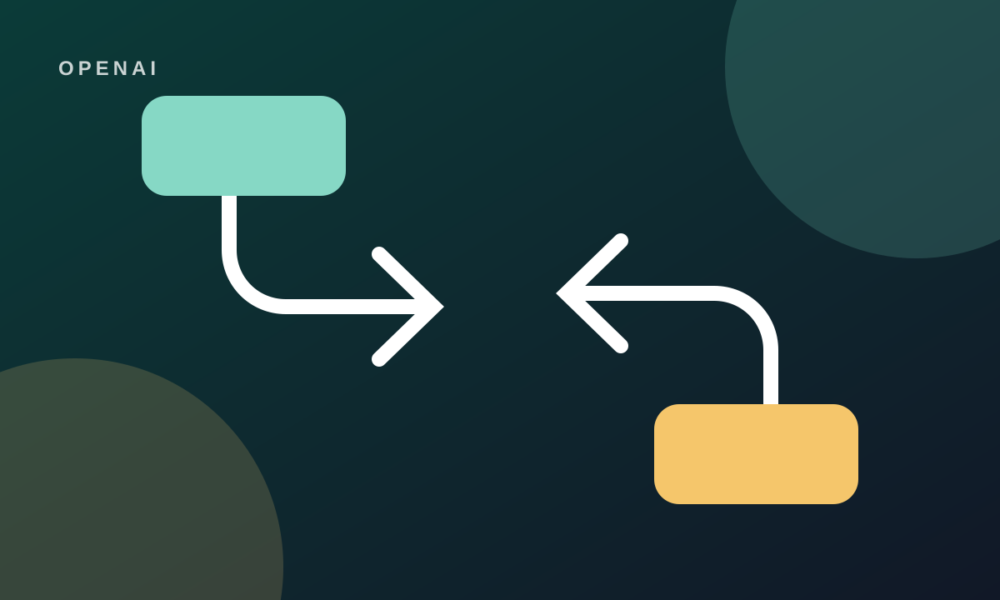
OpenAI · July 31
Codex Announces Replacements for GPT-5.4 Models Ahead of Retirement
What is the update: GPT-5.4 and GPT-5.4 mini will leave ChatGPT-authenticated Codex sessions on August 31, with GPT-5.6 Terra and Luna named as replacements.
Why it’s valuable for UXers: UX prototyping teams should update saved model settings, custom agents, scheduled tasks, and evaluation baselines before workflows silently change.
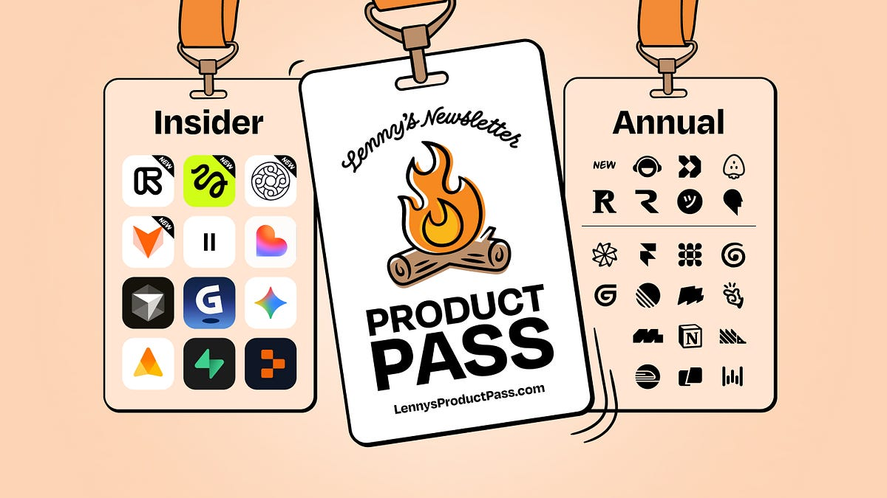
Lenny's Newsletter · July 28
Lenny’s Product Pass Expands Access to Creative and Product Tools
What is the update: The Product Pass added eleven products, including AI video and creative tools such as Runway, Higgsfield, Supercut, and Pangram.
Why it’s valuable for UXers: For teams evaluating costly AI tools, longer access periods create room to test real workflows and adoption value rather than judging from short trials.
Internal Updates
All 5
Tools & Releases
Learning & Curriculum
Best Practices
#uxw-genai
#agent-fabric
#design
#china-ai-workstream
#codex_all
Structural Clarity Judge Measures Whether AI Answers Are Easy to Scan
What is the update: Structural Clarity v0.3.0 launched in AI Registry as a custom evaluator for scanability, answer-first structure, and basic information design.
Why it's valuable for UXers: Teams can now measure whether AI responses avoid walls of text and buried answers instead of relying only on subjective review.
Fabric MCP Gateway Beta Makes Internal Tools Point-and-Click
What is the update: The Fabric MCP Gateway beta provides one desktop app for connecting Codex, Claude Code, and Cursor to Booking’s MCP catalogue with IAM authentication and a Tool Search toggle.
Why it's valuable for UXers: Designers and prototypers can access internal tools without terminal setup while gaining clearer control over context and token use.
Design AI Summit Confirms September 2 and Opens Community Participation
What is the update: The Design AI Summit confirmed September 2 as the correct date, with the project team continuing to shape talks, workshops, and participation.
Why it's valuable for UXers: UXers have a clear moment to share real AI workflows and turn individual experiments into reusable community learning.
China Plans a Multi-Day GenAI Upskilling Programme for October
What is the update: A tentative October GenAI upskilling programme is being planned for Shanghai, combining small-group advanced sessions with a train-the-trainer day.
Why it's valuable for UXers: The format could widen practical AI enablement beyond engineering, while the planned survey gives local teams a way to shape the curriculum.
Codex Lab Pairs Extra Credits with a Hands-On Learning Day
What is the update: Booking teams received a short-lived pool of additional Codex credits, paired with a 100-seat hands-on Codex Lab on August 11.
Why it's valuable for UXers: UX technologists can test faster prototype and implementation workflows while learning practical patterns before the credit window closes.
External Updates
Top picks and industry news
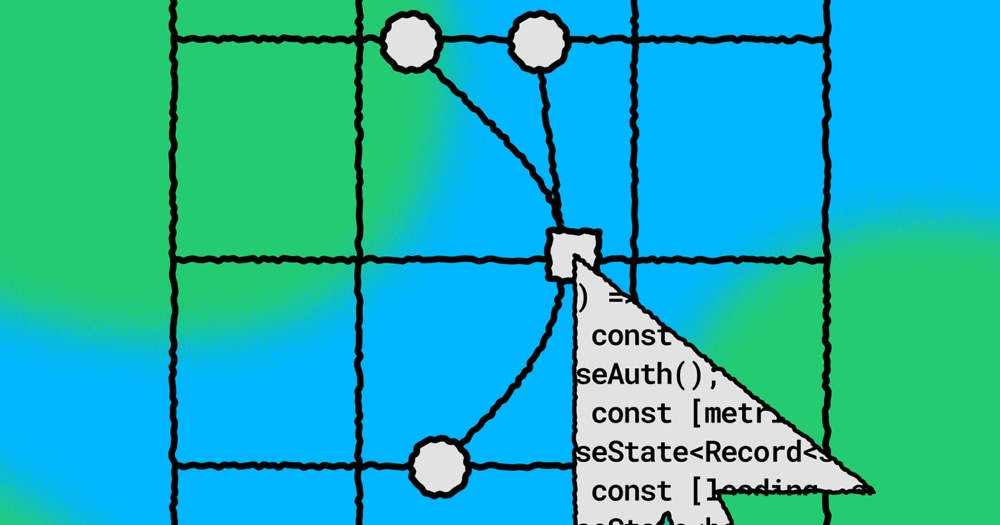
Top pick · 1Google Design · July 23
Code Is a Design Material
What is the update: Google Design argues that AI makes code directly usable in the design process, while warning that polished prototypes can hide unresolved product strategy and system decisions.
Why it’s valuable for UXers: It gives designers a balanced practice: use code to explore realistic interactions, but preserve low-fidelity mapping and deliberate thinking before fidelity creates false certainty.
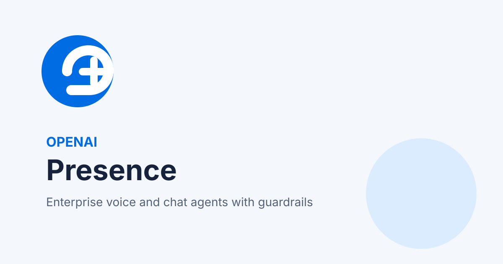
Top pick · 2OpenAI · July 22
OpenAI Presence Turns Enterprise Agents into Governed Experiences
What is the update: OpenAI introduced Presence for building enterprise voice and chat agents with policies, approved actions, escalation paths, simulations, evaluations, and continuous improvement.
Why it’s valuable for UXers: It is a strong reference for designing agent experiences where trust depends on visible boundaries, safe handoffs, and measurable behaviour—not only conversational quality.
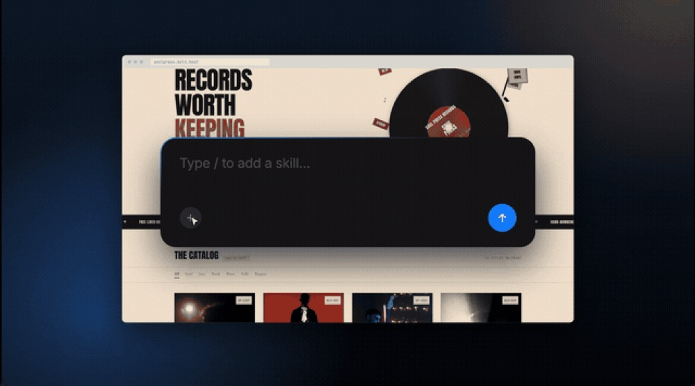
Top pick · 3Bolt · July 22
Bolt Skills Turn Team Context into Reusable Builder Behaviour
What is the update: Bolt introduced built-in, custom, and uploaded Skills that package reusable context, rules, and actions at project or workspace scope.
Why it’s valuable for UXers: Design standards, content rules, and repeatable prototyping workflows can travel with a team instead of being re-explained in every prompt.
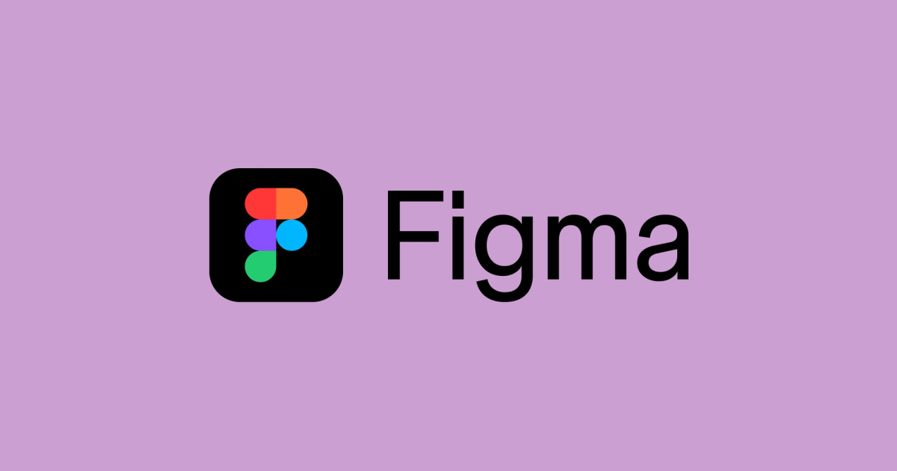
Figma · July 24
Figma Auto Layout Moves Closer to CSS Flexbox
What is the update: Figma updated auto layout to close common gaps with CSS Flexbox, applying the new behaviour to new frames while letting existing files opt in.
Why it’s valuable for UXers: Design intent can translate more predictably into implementation, reducing layout reinterpretation during handoff and code-backed prototyping.
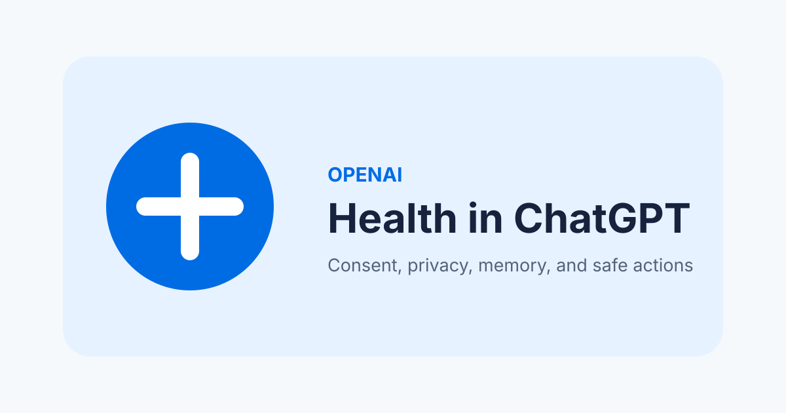
OpenAI · July 23
Health in ChatGPT Makes Consent and Data Boundaries Explicit
What is the update: OpenAI launched a health experience with per-use permissions, account disconnection, deletion controls, temporary chat, memory limits, and safeguards around external actions.
Why it’s valuable for UXers: It offers concrete patterns for sensitive AI experiences: progressive consent, reversible connections, clear retention rules, and stricter boundaries around consequential actions.
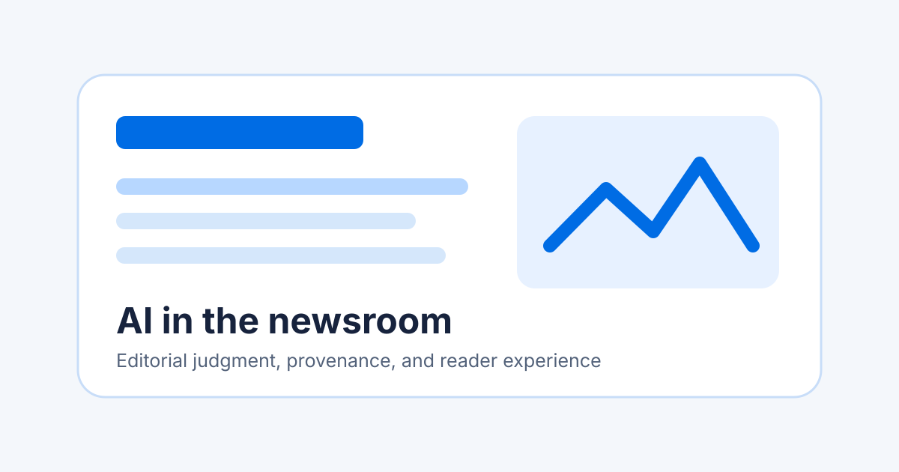
OpenAI · July 22
Newsrooms Use AI While Keeping Editorial Judgment in the Loop
What is the update: OpenAI documented how news organisations use AI for captions, headlines, internal knowledge, and reader experiences while retaining editorial control.
Why it’s valuable for UXers: Content designers can study how AI assistance is introduced without obscuring authorship, provenance, or the human judgment behind published work.
Internal Updates
All 6
Tools & Releases
Learning & Curriculum
Best Practices
Others
#genai_eng
#agent-fabric
#ai-for-ux
#design
#design
#genai_eng
Skills MCP Server Makes Booking Skills Discoverable Inside AI Coding Tools
What is the update: the community-launched Skills MCP Server lets Claude Code, Codex, and Cursor search the Booking Skills Catalog semantically and load only the skills needed for the current task.
Why it's valuable for UXers: design technologists and prototypers can discover reusable internal workflows in context without loading or remembering the entire catalogue.
Agent Fabric Becomes One Home for Agents, MCP Servers, Skills, and Profiles
What is the update: Agent Fabric launched a single internal destination for discovering, building, and running agents alongside MCP servers, skills, and reusable profiles.
Why it's valuable for UXers: it reduces fragmented entry points and makes AI-enabled design and prototyping workflows easier to find, share, and hand over.
AI for UX Session 4 Shares Claude Commands Recording and Handout
What is the update: the AI for UX community published the Session 4 material on Claude Commands, including the recording and a reusable handout after the live workshop.
Why it's valuable for UXers: teams can turn repeated research, critique, and prototype tasks into shared commands without relying on live attendance.
Booking Design+AI Summit Opens a Hands-On Community Showcase
What is the update: the Design+AI Summit moved to September 2 and invited designers to share AI-assisted processes, cases, tools, and workflows alongside talks and workshops.
Why it's valuable for UXers: it creates a practical venue for comparing what works across teams and turning individual experiments into reusable community knowledge.
Production-Ready AI Illustration Tool Recruits Community Testers
What is the update: a near-release internal tool for generating production-ready illustrations with AI opened a round of 30-minute community user-testing sessions.
Why it's valuable for UXers: designers can influence the workflow before launch and evaluate whether generated visuals meet real production and brand-quality needs.
GPT-5.6 Guide Maps Practical Model and Agent Workflow Choices
What is the update: a practical internal guide explains the Sol, Terra, and Luna variants, reasoning effort, token usage, subagents, AGENTS.md, and verification patterns.
Why it's valuable for UXers: UX technologists can make more deliberate model, cost, and quality choices when building or evaluating AI-assisted prototypes.
External Updates
Top picks and industry news
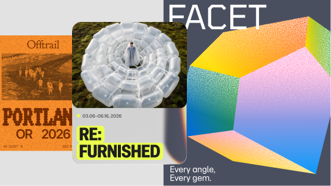
Top pick · 1Figma · July 16
Code-Backed Screens Arrive on the Canvas with Variables Attached
What is the update: screens brought into Figma from Make previews, Figma MCP, or the Chrome extension can now bind to existing variables and arrive with more auto layout.
Why it’s valuable for UXers: live interfaces can return to the canvas with more of their design-system meaning intact, reducing manual rebuilding during design-to-code handoff.
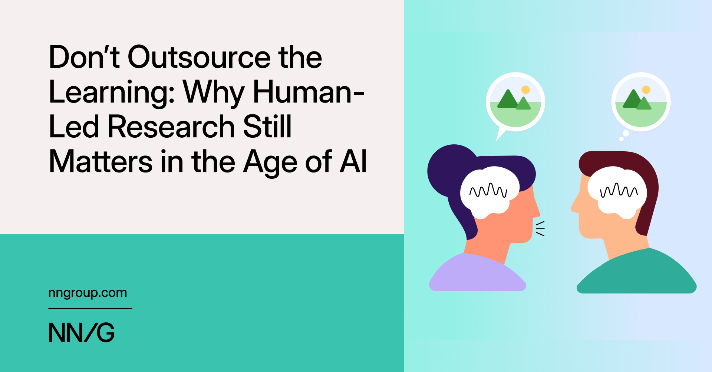
Top pick · 2Nielsen Norman Group · July 17
Human-Led Research Still Matters in the Age of AI
What is the update: NN/g argues that AI can automate research tasks, but it cannot replace the shared learning teams build by observing users, interpreting evidence, and making sense of ambiguity together.
Why it’s valuable for UXers: it gives teams a practical boundary for AI-assisted research: automate supporting work while keeping human observation, interpretation, and alignment at the centre.
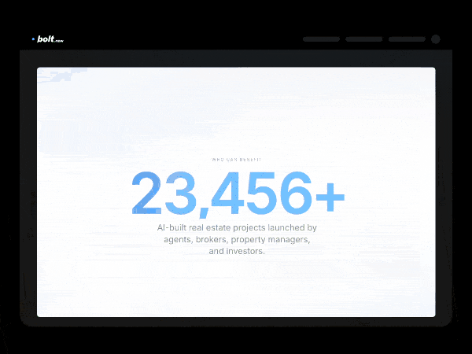
Top pick · 3Bolt · July 16
Bolt Slides Turns Presentations into Interactive Experiences
What is the update: Bolt launched an open-source agent for creating interactive decks with live data, working prototypes, 3D elements, and support for Claude Code, Codex, and Cursor.
Why it’s valuable for UXers: presentations can become testable communication surfaces instead of static exports, tightening the loop between storytelling and prototyping.
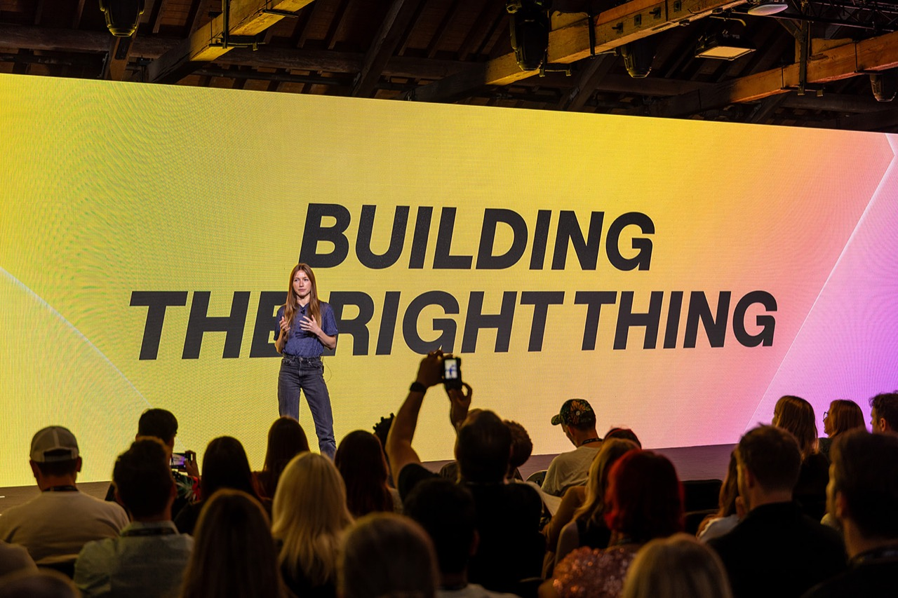
Miro · July 16
Out of the Chat Window, Onto the Canvas
What is the update: Miro argues that AI value stalls when insights remain inside private chat sessions instead of moving onto a shared team canvas with visible evidence and decisions.
Why it’s valuable for UXers: it offers a practical model for placing AI inside collaborative workflows where alignment and shared judgment matter more than generation speed.
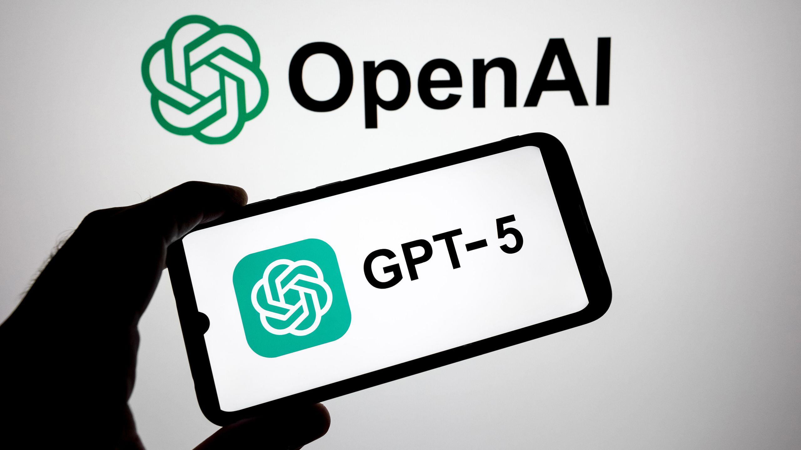
OpenAI · July 16
ChatGPT Desktop Unifies Chat, Work, Codex, and Recents
What is the update: the desktop app introduced clearer switching between Chat, Work, and Codex, a unified recents view, Projects, and cross-device continuation for Work tasks.
Why it’s valuable for UXers: longer research and design tasks can retain context while moving between modes and devices, with fewer fragmented entry points.

Anthropic · July 14
Claude for Teachers Builds Around a Specific Professional Workflow
What is the update: Anthropic introduced a teacher-focused Claude experience with education skills, curriculum connectors, privacy controls, and evaluation partnerships.
Why it’s valuable for UXers: it is a useful example of shaping an AI product around domain language, trusted data, concrete tasks, and role-specific guardrails.

Figma · July 14
Admins Can Export AI Credit Usage During Betas
What is the update: Figma admins can now download CSV reports showing how beta AI-feature credits are being used across their organisation.
Why it’s valuable for UXers: design leaders gain a clearer signal of adoption and cost before deciding which AI workflows deserve broader rollout or enablement.

OpenAI · July 15
Custom Instructions Expand to 5,000 Characters
What is the update: ChatGPT raised the custom-instruction limit from 1,500 to 5,000 characters for paid, business, enterprise, and education plans.
Why it’s valuable for UXers: teams can preserve richer role, audience, quality, and workflow context without repeating a long setup in every design or research conversation.

OpenAI · July 14
ChatGPT Adds Unified Search Across Chats, Projects, Images, and Files
What is the update: a new unified search can retrieve conversations, project content, generated images, and uploaded documents with filters from one place.
Why it’s valuable for UXers: research evidence and prior explorations become easier to recover, reducing repeated work across long-running projects.
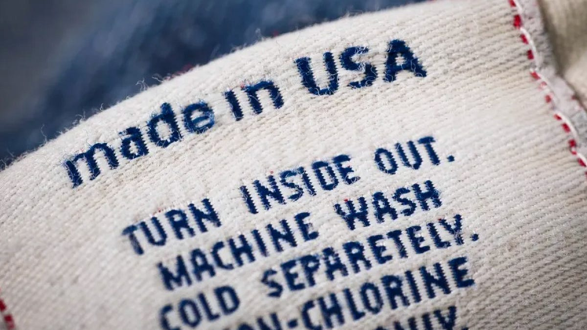
UX Collective · July 13
“Who Made This?” Becomes a Core Trust Question for AI Content
What is the update: UX Collective examines how AI-generated creative work makes authorship, attribution, and the origin of an artefact harder for people to understand.
Why it’s valuable for UXers: products that generate or transform content need clearer provenance cues so users can judge who—or what—created an output and how much to trust it.
Internal Updates
External Updates
Top picks and industry news
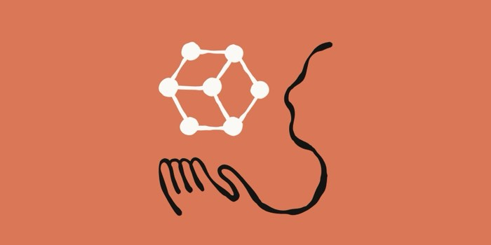
Top pick · 1Anthropic · May 6
Claude Managed Agents: Dreaming, Outcomes & Multiagent Orchestration
Anthropic's managed agents can now "dream" — autonomously reviewing past sessions to refine their memories and improve over time. Outcomes let agents grade their own work against success criteria, and multiagent orchestration enables task delegation to specialist subagents. For UX designers, this means designing interfaces for AI systems that self-improve, need transparency controls for memory updates, and require progress visibility across multiple parallel agents.
 Top pick · 2
Top pick · 2Figma · May 5
Figma Release Notes Livestream: Co-Designing with AI Agents
Figma's May livestream showcased live demos of product teams co-designing with AI agents using MCP skills and "write to canvas" features. The session covered vibe-coded prototypes, connecting design systems to code, and rapid idea deployment. FigJam also gained new MCP skills turning it into a whiteboard for coding agents. The clearest signal yet that Figma sees AI agents as first-class collaborators.
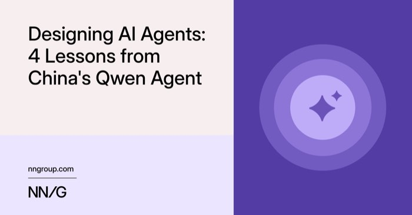
Top pick · 3Nielsen Norman Group · May 8
Designing AI Agents: 4 Lessons from China's Qwen Agent
NN/g's May 8 article studies Qwen's AI agent and draws four design lessons around discoverability, familiar patterns, personal data, and user autonomy. This is directly relevant for teams designing agentic experiences because it turns abstract AI principles into inspectable interaction guidance. UX designers can use it as a checklist when reviewing agents that act across tasks or data sources. It also restores missing NN/g coverage for Week 1.
Lenny's Newsletter · May 7
Code With Claude: The 5 Biggest Updates Explained
Claire Vo breaks down the major Code with Claude announcements, including scheduled AI routines, outcomes, multi-agent orchestration, and memory improvements. These updates matter for UX because they change what AI collaborators can own over time: recurring work, self-checking against goals, and parallel specialist tasks. Designers should watch the interaction patterns around oversight, task status, and review. The piece is a strong catch-up for teams tracking Claude as a design-and-build partner.
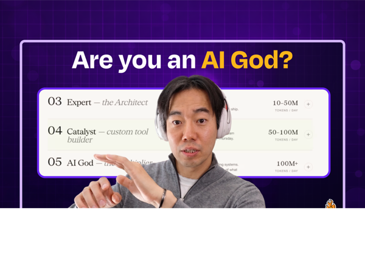
Lenny's Newsletter · May 6
Sendbird's AI Adoption Playbook: Quests, Tokens, and Skills
Sendbird's John Kim explains how the company turned AI adoption into a product-like system with quests, token tiers, leaderboards, and a skills marketplace. The most useful UX takeaway is that adoption is designed behavior: teams need incentives, progression, and practical examples that make AI workflows feel learnable. The case study also shows non-engineering teams shipping real outputs with AI. It is relevant for design ops teams building enablement programs around AI tools.
Lenny's Newsletter · May 9
Community Wisdom: Non-PMs Shipping, Claude Pricing, and AI in Games
This Community Wisdom edition captures product-community discussion around non-PMs shipping directly to production, Claude Code pricing experiments, and generative AI in games. The relevance for UX teams is governance: as AI lowers the barrier to shipping, teams need clearer review paths, quality standards, and role boundaries. It is also a useful read for understanding where practitioners feel friction around AI-assisted building. The topics connect directly to how design teams manage speed without losing product judgment.
Internal Updates
#mp-tpch-ai-guild-weekly
#design-systems
#design
TPCH AI Guild Digest Flags Toolbox Expansion and Quest Deep Dive
Update: TPCH AI Guild summarized Windsurf migration, 47 new Toolbox MCP tools, Quest Deep Dive skill, and GenAI plugin usability fixes. UX value: teams get early signals on the AI toolchain changes that affect research, PM workflows, and designer-facing MCP capabilities.
AI Page Builder MVP — Create Real Booking Experiences with AI
A new AI-powered tool lets anyone create real product experiences visually and through natural language — no coding required. It uses real design system components, making outputs production-ready.
Unifying Conversational AI Identity Across Products
A rebranding exercise is underway to unify all traveller-facing conversational AI experiences with consistent identity across chatbot products.
External Updates
Top picks and industry news
Top pick · 1
UX Collective · May 11
The Prompt Is Not an Interface
UX Collective's May 11 issue argues that prompt boxes alone are not enough interface design for AI products. For UX teams, the point is important: people need structure, affordances, state, and feedback rather than being forced to invent the product through language. The article is a useful critique lens for any AI feature that defaults to a blank chat box. It replaces an older UX Collective item that was actually published in April.
Lenny's Newsletter · May 11
Spec-Driven Development: Notion's AI Engineering Workflow
Ryan Nystrom shows how Notion uses spec-first development so agents can do more of the coding while humans keep ownership of intent and review. The workflow includes automating standups, shipping PRs from a single comment, and using clear specs as the coordination layer. For UX teams, this maps directly to better AI handoffs: clearer acceptance criteria, sharper edge cases, and more inspectable outputs. It is a practical companion to any design team experimenting with Claude Code or Codex.
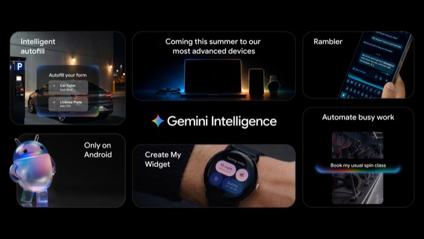
Top pick · 3Google Gemini · May 12
Gemini Intelligence Brings Proactive AI to Android
Google's official Android post introduces Gemini Intelligence, a proactive AI layer for browsing, form filling, task completion, and natural-language widget creation. For UX teams, the important shift is operating-system AI that can act across apps rather than staying inside a chat window. Designers will need to define consent, preview, correction, and handoff states for actions that touch multiple services. It is a cleaner source match than the previous third-party Android recap.
Figma · May 15
Figma Release Notes Roundup: May 2026
Figma's official May roundup confirms AI agents now have bidirectional write access to the design canvas via MCP. Agents like Claude Code and Cursor can create native components, apply variables, configure auto layout, and build full screens using your existing design system. Make gained voice-to-text prompting and question cards for structured decision-making. For design teams, this means AI agents are no longer read-only observers — they're active collaborators that can execute design decisions directly on your canvas.
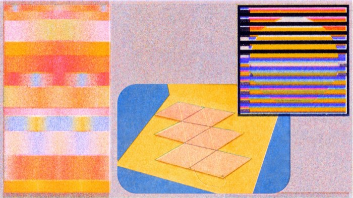
Figma Blog · May 12
What the Design-to-Code Loop Unlocks
Figma's Design Director of AI and engineer Alex Kern discuss how AI is collapsing the distance between design and engineering. The key insight: when AI can fluently translate between design and code in both directions, the traditional handoff disappears and designers can iterate at code speed. They explore what this means for the learning curve, how it changes designer-developer collaboration, and why the "loop" metaphor matters more than "handoff."
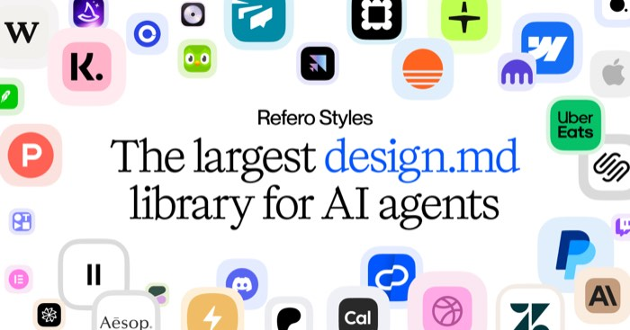
Sidebar.io / Refero · May 12
Design.md Supply — A Curated Library for AI Agents
A curated library of design.md files that AI agents can consume — covering colors, typography, spacing, and component patterns from top websites. Instead of training AI on random screenshots, these structured markdown files give agents explicit design rules. For teams using Claude Code or Cursor with MCP, this is a practical resource for creating AI-readable design specifications that produce better, more consistent output.
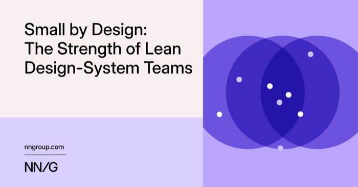
Nielsen Norman Group · May 15
Small by Design: The Strength of Lean Design-System Teams
NN/g explains how lean design-system teams can move faster when they are planned around clear priorities and impact. That is relevant to AI adoption because design-system teams are often expected to create the standards that agents will consume. The article is a useful reminder that smaller teams need sharper governance, not more parallel initiatives. It gives design leads a practical operating lens for scaling AI-readable systems work.
Lenny's Newsletter · May 17
Why We're at the Beginning of the AI Hardware Boom
Caitlin Kalinowski discusses why AI hardware and robotics are likely entering a new phase, including supply-chain constraints, lessons from consumer VR, and product-building lessons from Apple, Meta, and OpenAI. For UX designers, the relevance is the shift from screen-only AI toward embodied and ambient experiences. Hardware introduces different design questions around trust, feedback, recoverability, and physical context. It is a strategic read for teams watching where AI interaction models may go next.
Lenny's Newsletter · May 16
Community Wisdom: AI Slop, Voice Tools, and Multi-Agent Pipelines
This Community Wisdom issue covers screening AI-generated work in hiring, Wispr Flow alternatives for voice transcription, and the tradeoffs between multi-agent pipelines and MCP. Those are practical questions many UX teams are already facing as AI shows up in hiring, research synthesis, and design operations. The discussion is useful because it surfaces quality and governance concerns from practitioners rather than vendors. It belongs in the archive as a real-world adoption signal.
Internal Updates
#dev-china
#mp-tpch-ai-guild-weekly
#design
#design
China AI Digest Surfaces Ready-to-Merge and GenAI Upskilling
Update: China AI Workstream Bot summarized ready-to-merge automation, GenAI upskilling workshops, Glean auth migration, Cursor training, and the new bpages tool. UX value: UX engineers and design technologists get a weekly map of reusable AI skills, training paths, and publishing workflows that can speed prototype-to-review loops.
TPCH AI Guild Digest Surfaces Bpages, Upskilling, and Agent Patterns
Update: TPCH AI Guild summarized Cursor Days, GenAI upskilling, bpages, ContextRS agent PoC, agent-readable tech radar, and new skills. UX value: designers and UX engineers get a view of which internal AI tools are ready to try and which patterns are becoming reusable.
New #ai-for-ux Community Channel
A new dedicated Slack channel for UX designers working with AI — providing a space for support, guidance, tool sharing, and best practices.
Figma Config Watch Party — June 24
A Figma Config Watch Party is being organized for June 24 with local talks, demos, and networking for designers experimenting with Figma AI features.
External Updates
Top picks and industry news
Top pick · 1
UX Collective · May 18
Be Like Water: Rethinking the Design Process with AI
UX Collective's May 18 issue looks at how AI changes the shape of the design process rather than simply speeding up old steps. For UX teams, the useful framing is adaptability: designers need to move between research, synthesis, prototyping, and critique as AI makes those boundaries softer. The piece is a good discussion prompt for teams defining where AI fits in their rituals. It also restores missing Community-source coverage for Week 2.
Lenny's Newsletter · May 18
HTML Is the New Markdown: Claude Code as a Micro-App Builder
Claire Vo talks with Anthropic's Thariq Shihipar about how Claude Code is being used to build micro-apps for spec editing, living design systems, and richer internal workflows. The core UX point is that HTML artifacts can carry structure, interaction, and intent in a way static markdown cannot. For design teams, this suggests a near-term pattern: ask AI to produce inspectable tools and editable surfaces, not just prose summaries. It is especially relevant for teams turning product specs into working prototypes.
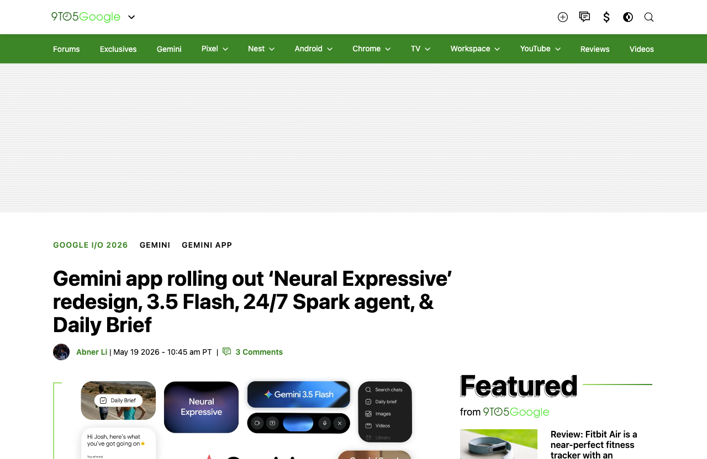
Google Gemini · May 19
Gemini App Gets "Neural Expressive" Redesign
Google's official Gemini app update introduces a more agentic experience with a "Neural Expressive" interface language, fluid motion, richer voice behavior, and more proactive help. This is an important AI-product reference because Google is moving Gemini beyond a static chat surface and into a more responsive assistant shell. UX teams can study the way the app balances expressive feedback, conversational continuity, and user control. It is a stronger source match than the previous third-party recap.
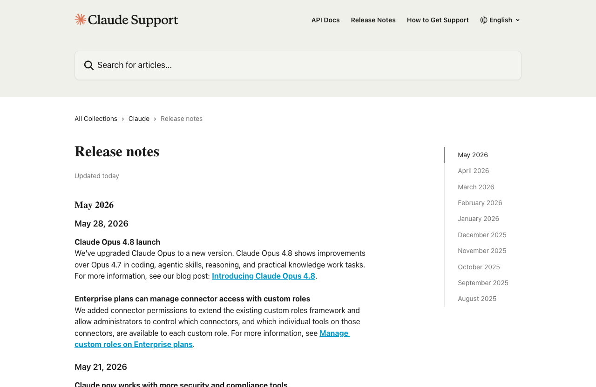
Claude Release Notes · May 21
Claude Adds Compliance API Integrations
Anthropic's Claude release notes added Compliance API integrations for teams that need governance across their AI tools. This is not a flashy UI feature, but it matters for design organizations working in regulated or enterprise contexts where research notes, product specs, and design-system documentation move through AI workflows. The practical UX impact is that Claude can be approved in more team environments instead of being treated as a shadow tool. It makes AI-assisted design work easier to operationalize responsibly.
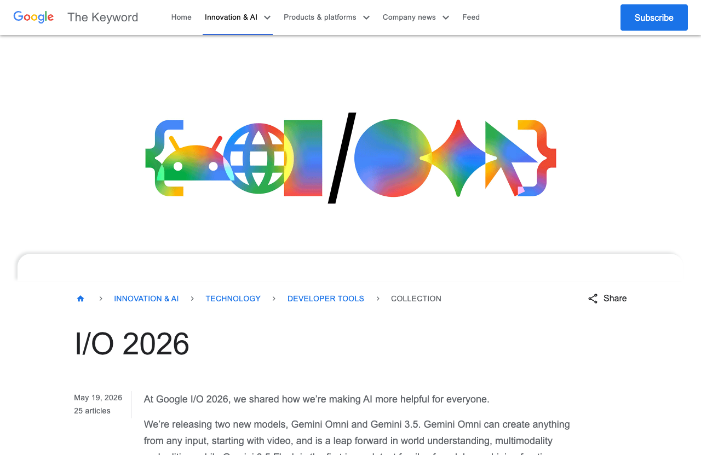
Google Blog · May 19
Google I/O 2026 Brings New Gemini and Developer AI Updates
Google's I/O roundup collects the week's AI announcements across Gemini models and developer tooling. Even when individual announcements are developer-facing, they shape what product teams can prototype: richer multimodal behavior, faster agent workflows, and new expectations for AI-powered interfaces. For UX teams, this is the source to review before planning AI feature concepts around Google capabilities. It is also the official-source replacement for relying only on recap sites.
Griffin Wooldridge (YouTube) · May 19
The Ultimate AI Design Workflow for UI/UX
A complete walkthrough of an AI-powered UX workflow using Claude Code — from rough idea to fully deployed web app without ever opening Figma. Covers planning, MVP building, design iteration, and publishing in under 30 minutes. Whether or not you'd skip Figma entirely, this demonstrates how fast the design-to-ship cycle can be with AI and challenges assumptions about what tools are essential. A useful provocation for teams debating where AI fits in their process.
Figma · May 20
The Figma Agent Is Here
Figma's official release notes added the Figma Agent beta on May 20, bringing an AI collaborator directly into the canvas for generating, remixing, and editing designs. This is more relevant than the previous third-party revenue item because it changes the working surface designers use every day. For UX teams, the key shift is that AI can now operate inside design files while respecting design-system context and human review. Teams should start defining when agent-generated changes are acceptable and how they are reviewed.
Lenny's Newsletter · May 24
The AI Paradox: More Automation, More Humans, More Work
Dan Shipper argues that more automation can create more human coordination, review, and judgment work rather than simply removing it. For UX teams, that is a strong framing for why agentic products need clear accountability, approval, and exception-handling states. The piece is especially relevant to PMs and designers because it treats AI work as an operating model shift, not just a productivity feature. It gives teams language for planning where humans stay in the loop.
Lenny's Newsletter · May 23
Community Wisdom: AI in Design, QA, and Outreach Tools
This Community Wisdom edition collects practitioner discussion on AI cold outreach tools, the state of AI in design, QA's relevance in 2026, and advice for students entering product management. The value is in the field signals: how teams are actually debating AI quality, process ownership, and career direction. For UX designers, the AI-in-design and QA threads are useful prompts for team discussion. It is a lightweight way to catch concerns that formal product announcements often miss.
Lenny's Newsletter · May 20
What Launched at Google I/O 2026
Claire Vo's Google I/O recap focuses on what builders should actually care about across Google's AI launches. It is a useful complement to the official Google roundup because it filters announcements through working product judgment: what feels fast, what is broken, and what may matter for teams shipping AI features. For UX designers, that helps separate demo polish from design implications. The recap is worth reviewing before turning I/O announcements into roadmap ideas.
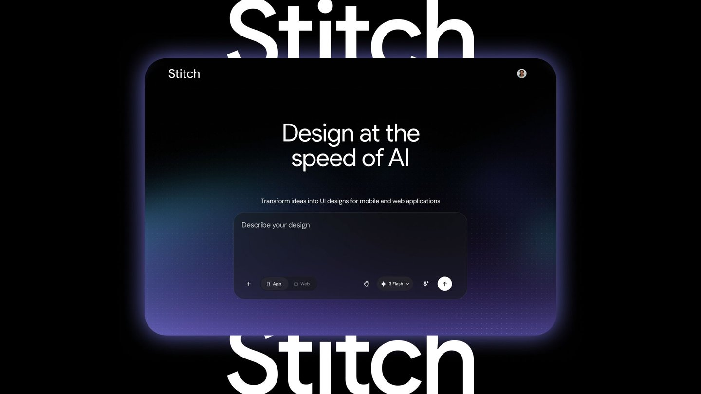
Google Stitch · May 19
Google Stitch Adds Real-Time Design Collaboration
Google Labs introduced real-time design updates for Stitch on May 19, expanding the AI UI tool beyond one-shot prompt generation. This matters because collaborative iteration is where design tools either become useful or stay as demos. UX teams can use the update as a signal that prompt-to-UI workflows are moving toward shared canvases, voice feedback, and design-to-development handoff. It also closes a clear source-coverage gap from the Google Stitch row in sources.md.
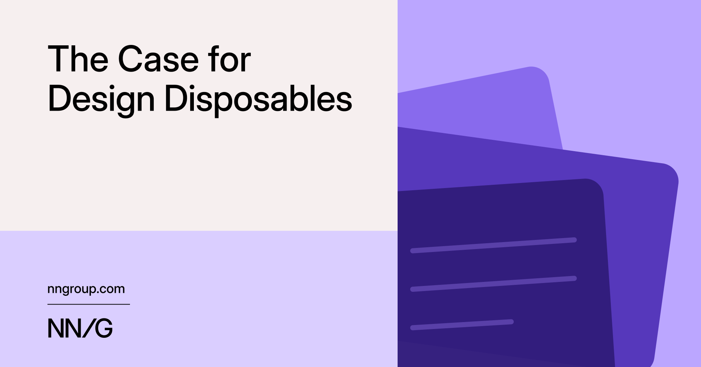
Nielsen Norman Group · May 22
The Case for Design Disposables
NN/g argues that rough design artifacts are often meant to help teams think, not to become polished deliverables. That distinction is especially useful in AI-assisted design, where tools can make throwaway artifacts look more finished than they deserve. UX teams should label which outputs are exploratory so stakeholders do not over-invest in early generated work. It is a practical critique habit for fast AI prototyping.
Internal Updates
#dev-china
#mp-tpch-ai-guild-weekly
#ai-gateway-updates
China AI Digest Highlights Codex Credits and Shared AGENTS.md Practices
Update: China AI Workstream Bot summarized Codex credits/connectors, shared AGENTS.md practices, Auto-Fix in CI, AI review templates, and agents.booking.com demos. UX value: teams prototyping with agents can see which enablement pieces are becoming reusable standards instead of one-off experiments.
TPCH AI Guild Digest Highlights Agents, Codex Credits, and AI Review Patterns
Update: TPCH AI Guild summarized agents.booking.com access, Codex credits, Auto-Fix CI, AI review templates, token analytics, and spec-to-ET skills. UX value: teams can see where agentic work is ready for broad use and where human review, briefing, and token discipline still matter.
AI Gateway Releases Gemini 3.5 Flash for Fast Prototyping
Update: AI Gateway made Gemini 3.5 Flash available through GenAI Gateway for fast, cost-effective, high-throughput use cases. UX value: teams can test low-latency AI interactions and cheaper prototype paths before committing to heavier models.
External Updates
Top picks and industry news
Lenny's Newsletter · May 25
How the Engineer Behind Claude Cowork Actually Uses Claude
Claire Vo interviews Anthropic's Felix Rieseberg about how he uses Claude Cowork in real product-building situations, including 3D house walkthroughs from floor plans, promise tracking, and lightweight hardware experiments. The useful UX signal is that AI assistants are being shaped as ongoing collaborators across messy multimodal work, not only chat-based answer machines. Designers can study the examples for interaction patterns around progress visibility, artifacts, and human review. It is a concrete case study for teams thinking about desktop AI workflows.
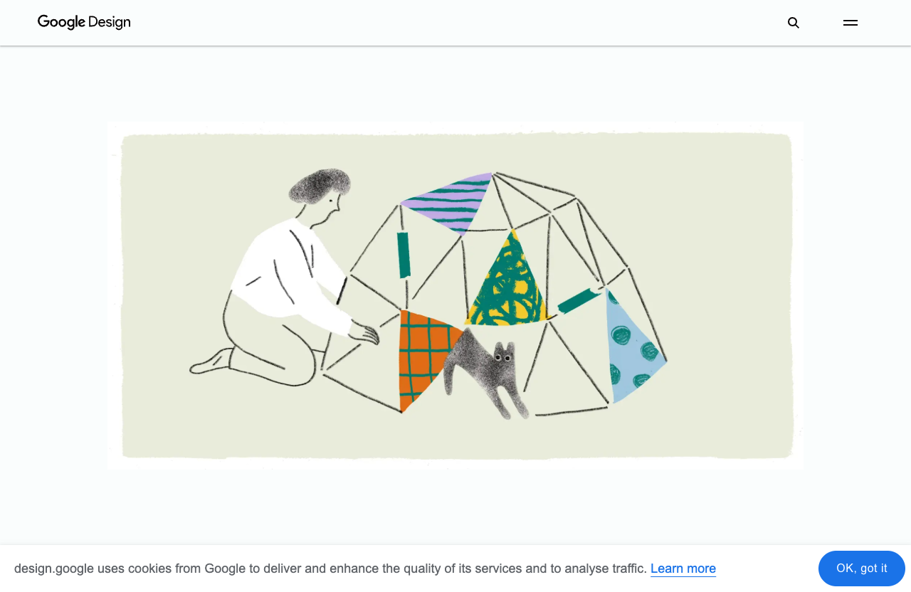
Google Design · May 25
Simulating Intelligence
Google Design's guide focuses on techniques for prototyping machine-learning systems across products and features before teams commit to a full build. It frames early uncertainty around reach, impact, and engineering effort as something designers can explore through lightweight prototypes, including Wizard-of-Oz-style simulations. For UX teams, the useful takeaway is to test AI behavior, failure cases, and user expectations before production model quality or data availability is fully settled.
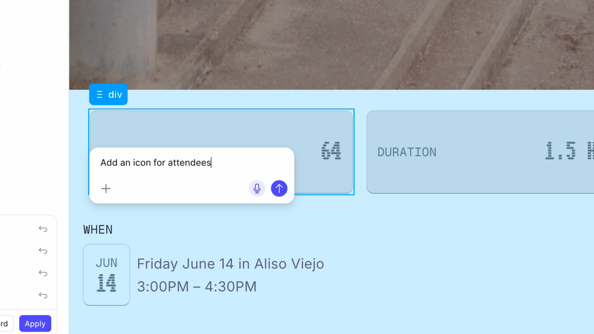
Figma Blog · May 28
Figma Make Connects to Local Codebases
Figma announced that Make can connect to local code, letting teams visually edit product UI, prompt against specific elements, and open pull requests from a design-led surface. This is a major design-to-code workflow signal because it moves AI changes from isolated mockups into real product code. UX teams can use it to evaluate whether visual edits, contextual prompting, and branch-based review reduce handoff friction. It also makes design quality standards more important because AI-generated code changes can now move much closer to production.
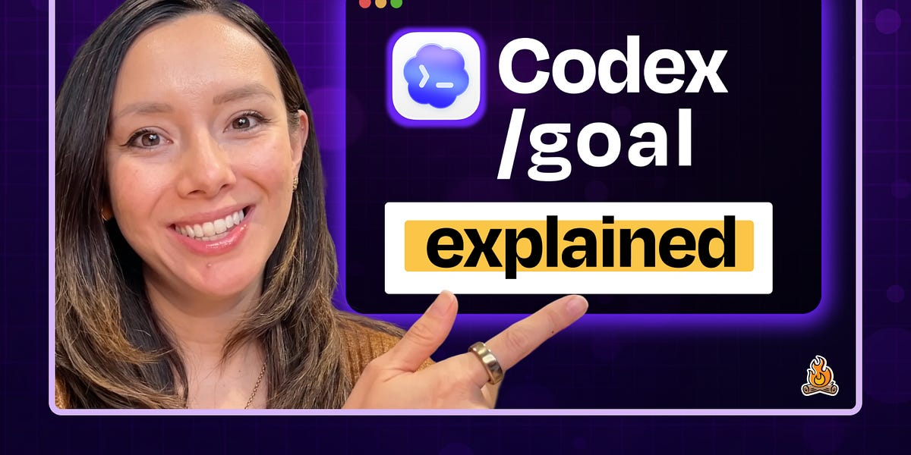
Lenny's Newsletter · May 27
Codex Goals Turn Long Tasks into Set-and-Review Workflows
Claire Vo breaks down Codex Goals with a live demo, real use cases, and a framework for writing goals that can run for hours. The useful UX pattern is the shift from giving an agent a command to defining success criteria, constraints, and reviewable outcomes. Designers can borrow that framing for implementation briefs, design-system cleanup, and prototype iteration. It is a practical reminder that better AI outputs often come from designing the task contract, not just polishing the prompt.
Lenny's Newsletter · May 28
Claude Opus 4.8: First Impressions for Builders
Claire Vo tested Claude Opus 4.8 across coding, design, and strategy tasks and compared where it excels or falls short. The value for UX teams is the hands-on evaluation style: models should be judged through realistic work, not only benchmark claims. For designers using Claude in product-building loops, the episode is useful for spotting where deeper reasoning helps and where human critique still matters. It supports a healthier team habit of testing models against actual workflow quality.
Shapes · May 26
Figma Agent: A First Look in the Canvas
Shapes published a hands-on look at Figma Agent, testing what happens when an AI tool can operate directly inside a design canvas. This is relevant because the canvas is not just a place to generate assets; it is where teams negotiate hierarchy, consistency, and design-system fit. UX designers should pay attention to what the agent changes well, what it misunderstands, and where review controls are needed. The article is a useful complement to official Figma announcements because it evaluates the experience from a practitioner angle.
Lenny's Newsletter · May 31
A Rational Conversation on Where AI Is Going
Benedict Evans frames AI as a 1997-internet-style moment: transformative, uneven, and still hard to price or predict. For UX teams, that framing is useful because it keeps both hype and dismissal in check when planning AI product bets. The conversation surfaces questions about job loss, value capture, and where AI will actually change user behavior. It belongs in team discussion because product strategy needs a sober model of uncertainty, not only launch-note optimism.

Lenny's Newsletter · May 30
Community Wisdom: AI in Interviews and Org Design
This Community Wisdom issue covers practitioners debating people using AI in interviews, product org design when knowledge sits in one person’s head, and when to rename products. The AI interview discussion is especially relevant for UX and product teams because it exposes how quickly norms around authorship, assessment, and tool use are changing. For design leaders, the org-design thread also connects to a common AI adoption problem: individual productivity does not automatically become team capability. It is a grounded signal of the governance questions teams are already facing.
Nielsen Norman Group · May 29
How to Get Research Recommendations on the Roadmap
NN/g explains how researchers can influence roadmaps by joining planning early, understanding constraints, and tying recommendations to product metrics. This is timely for AI work because research insights often get buried beneath fast prototype cycles and vendor demos. UX teams can use the advice to make AI-related research more actionable: translate findings into decisions, timing, and tradeoffs. It is a useful reminder that insight quality depends on whether it changes planning, not just whether it is well documented.
Nielsen Norman Group · May 29
Using RAS to Guide UX Research Allocation
NN/g introduces RAS as a way to allocate UX research resources based on impact rather than output volume. For AI-heavy product portfolios, that matters because every team can claim urgency, but not every question deserves the same research depth. The framework helps research and design leaders decide where to invest evaluative studies, discovery, or lighter-weight review. It gives teams a more disciplined way to prioritize AI research requests without defaulting to whoever asks loudest.
Internal Updates
#dev-china
#ai-gateway-updates
#design
#design
#ai-for-ux
#ai-for-ux
China AI Digest Tracks Production Claude Code and AI Incident Practices
Update: China AI Workstream Bot summarized production Claude Code infrastructure, AI-tool incident management, Miro MCP, BUI Compose skill updates, and AI-assisted incident response. UX value: UX engineers can see where AI workflows are moving from local experiments into service-grade, governed team infrastructure.
AI Gateway Migrates OpenAI Traffic to Priority Processing
Update: AI Gateway completed the migration from OpenAI Scale Tier to Priority Processing for affected Booking ML apps. UX value: more consistent latency and reliability changes what teams can safely promise in AI-powered interfaces and experiments.
AI Research Synthesizer Agent for UX Teams
A designer built a Glean AI agent that synthesizes research briefs, user testing scripts, and transcripts into structured reports with themes, quotes, and recommendations.
AI Page Builder Workshop — Build Your Product in 2 Hours
A hands-on workshop for non-developers to build real Booking experiences with AI Page Builder — no coding required. June 16 on Zoom.
Building Custom Animations with Claude Code
A designer used Claude Code to build custom animations for the Trip Planner — exported the code and engineers implemented it directly.
Figma Make Templates — Rapid AI Prototyping for User Tests
A workflow using Figma Make templates to create high-fidelity prototypes in minutes — reducing prototyping time from hours to minutes for user testing.
External Updates
Top picks and industry news
Internal Updates
#dev-china
#mp-tpch-ai-guild-weekly
#design
#design
#design
#ai-for-ux
#mp-ai-engineering
#ai-for-ux
China AI Digest Brings Zoom MCP and Production Agent Patterns Into View
Update: China AI Workstream Bot summarized Zoom MCP, production Claude Code patterns, Slido AI, skill repo migration, GraphQL query skill, and AI-assisted Perl-to-Java migration. UX value: UXers can reuse these signals for meeting-to-artifact workflows, prototype infrastructure, and agent-ready documentation practices.
TPCH AI Guild Digest Connects AI-Native Product Work to Released Tools
Update: TPCH AI Guild summarized Project Flux, Auto Reply on AgentHub, product-spec-to-ET, scheduled agents, Cleanr, Zoom MCP, and Claude Code production patterns. UX value: UXers get product-facing examples where AI improved delivery speed, reliability, and research-to-build workflows.
WWDC 2026 Recap — AI Features Reshaping Apple's Platform
A recap of the WWDC 2026 Watch Party — Siri rebuilt on Gemini, Xcode 27 with AI coding agents (Claude + Gemini), Liquid Glass UI, and Visual Intelligence expanding across devices.
AI Page Builder Workshop — Demand Splits Into 3 Sessions
The AI Page Builder workshop split into 3 sessions due to overwhelming signup demand — a strong signal of designer interest in AI-powered prototyping.
Content Engine Plugin — Fill Figma Designs with Real Data via Claude
A Figma plugin that uses Claude to fill designs with real Booking.com data — hotels, attractions, rides, destinations, personas, and localized content.
MCP Context Optimization — From 35% to Under 1%
A tip for Claude Code users: use Toolbox-Preview's Dynamic Search to reduce MCP context usage from 35% to under 1% per session.
iOS 27 Siri AI System Prompt Revealed
The new Siri AI system prompt has been shared — a look at how Apple crafts prompts for their rebuilt assistant powered by Gemini.
Figma AI Agent — First Impressions from the Team
First impressions of Figma's AI agent — execution quality is good but speed is an issue for small tasks. Better for content-first design work.
External Updates
Top picks and industry news
Top pick · 1
UX Collective · Jun 8
A Sharp Tool Can Still Ruin the Cut
Update: UX Collective published a Week 5 essay on why powerful AI tools still need design judgment, structure, and critique. UX value: it gives designers a useful caution against treating faster AI output as automatically better product thinking.
Top pick · 2
Nielsen Norman Group · Jun 8
The 3 Sizes of UX Copy
Update: NN/g explained long-form, short-form, and microcopy as different UX copy sizes with different jobs. UX value: UX writers and designers can use the frame to decide where AI-generated copy needs structure, brevity, or more contextual explanation.
Figma Blog · Jun 8
You Never Stop Cultivating Taste
Figma's CDO Loredana Crisan wrote about how design taste is developed through practice and intentional choices, especially in the age of AI-assisted design. The essay argues that when AI can generate endless variations, the designer's role shifts toward curation, judgment, and taste. For UX teams, this is a valuable framing: AI doesn't replace the need for taste — it amplifies the need for it. A useful read for any designer wondering how their craft evolves alongside generative tools.
Lenny's Newsletter · Jun 9
Essential Books for Product Builders — Part 2
Update: Lenny’s Newsletter shared a second collection of essential books for product builders, focused on timeless product, leadership, and builder judgment. UX value: it helps UXers broaden from design execution into an AI-builder mindset, where product taste, systems thinking, and decision quality matter as much as tool fluency.
Nielsen Norman Group · Jun 12
Context Architecture for AI Systems
Update: NN/g introduced context architecture as applying information architecture principles to AI systems so agents interpret information and produce better user-aligned responses. UX value: designers get a concrete vocabulary for shaping what AI tools know, retrieve, and expose instead of treating context as a hidden technical detail.
Nielsen Norman Group · Jun 12
The Core Skill of Design in the AI Era: Critique
Update: NN/g argued that useful AI-powered systems depend on designers encoding user needs and design judgment into evaluation criteria. UX value: critique becomes an operational skill for reviewing AI outputs, defining success, and keeping generated experiences aligned with real user value.

Anthropic · Jun 9
Claude Fable 5 and Mythos 5 — Anthropic's Next Generation
Anthropic launched two new models: Fable 5 (broadly available) and Mythos 5 (restricted to vetted partners). Fable 5 advances reasoning and creative work, while Mythos 5 pushes frontier capabilities under tighter safety controls. For UX teams using Claude in design workflows, Fable 5's improved reasoning means better code generation, more nuanced design feedback, and stronger multi-step task handling. The tiered access model also signals how AI products may increasingly differentiate by trust and governance levels.
Google · Jun 9
Gemini 3.5 Live Translate — Real-Time Speech in 70+ Languages
Google launched a new Gemini audio model enabling near real-time speech-to-speech translation in over 70 languages. For UX designers working on multilingual products, this changes the baseline assumption about language barriers in voice interfaces. Teams can now prototype cross-language experiences without waiting for traditional localization pipelines. The feature also raises new design questions around turn-taking, latency feedback, and cultural context in translated conversations.
Google · Jun 10
Gemini App Adds Personalized Business Workflows
Google connected the Gemini app to Google Business Profile and introduced Business notebooks for more personalized small-business workflows. For UX teams, this demonstrates how AI assistants are evolving from generic chat into context-aware tools that pull from existing business data. The pattern of connecting AI to existing profiles — rather than requiring manual context — is one designers should study for any product where users already have structured data.
Figma · Jun 10
Figma Config 2026 Announced — AI Takes Center Stage
Figma announced an investor session at Config 2026 (June 23–25, Moscone Center SF) with AI positioned as a central conference theme. For design teams, Config is where Figma typically unveils major product updates — and the AI focus signals significant new capabilities are coming. Teams should plan to watch the keynote and evaluate how new AI features might change their design-to-code, prototyping, and collaboration workflows. Mark your calendar for June 24.
Anthropic · Jun 11
Anthropic Launches $150M Claude Corps Fellowship
Anthropic announced a $150M fellowship placing 1,000 early-career fellows with US nonprofits for a year, including free Claude credits per host organization. For UX designers, this signals that AI companies are investing in broad access beyond tech — meaning designers may encounter Claude-powered workflows in government, education, and social-sector contexts. The initiative also raises questions about how AI tools should be designed for users who are new to the technology and need different onboarding, support, and trust patterns.
Internal Updates
#dev-china
#ai-for-ux
#ai-for-ux
#ai-for-ux
#ai-for-ux
#mp-ai-engineering
China AI Digest Adds Cost Visibility and Trust Signals for AI Workflows
Update: China AI Workstream Bot summarized Claude Code cost dashboards, Fable access constraints, new MCPs, Google Docs OAuth, memory services, SkillSpector, and Lingo MCP. UX value: teams get concrete governance, localization, and cost signals to design AI workflows that are useful without becoming uncontrolled.
Figma Comments MCP Lets Agents Read Design Feedback
A Booking-specific Figma comments MCP lets Claude Code, Codex, or Cursor read Figma comments so designers can catch up on feedback, spot themes, and draft replies while staying in control.
Designers Compare Claude Code Prototype Collaboration Models
A practical thread compared how teams collaborate around AI-coded prototypes using Claude, Figma MCP, GenAI Gateway, GitLab Pages, and PR-based review.
Claude Code Governance Makes Cost Tracking Part of AI UX Work
A Claude Code governance thread turned cost visibility into a practical workflow topic for UX teams using AI prototyping tools: track session spend, choose models intentionally, and connect usage to measurable team value.
AI Fundamentals for UX Starts with Prompting
A new AI learning series for the UX community starts with prompt fundamentals: structure, user vs. system prompts, and how prompt wording changes outcomes.
AI Skill Modernizes Android Screens to BUI Compose
A new AI-assisted skill helps teams modernize Android screens from XML views to BUI Compose, connecting AI workflows with design-system migration work.
External Updates
Top picks and industry news
Top pick · 1
UX Collective · Jun 15
AI Design Is Fluent, and That Is the Problem
Update: UX Collective examined how AI design output can look fluent and polished while still lacking product meaning or design intent. UX value: UXers get a sharper review lens for generated interfaces that look finished before the underlying problem, hierarchy, and behavior are actually resolved.
Figma · Jun 15
Figma Desktop Gets Tab Groups for Better Workflow Organization
Figma shipped tab groups in the desktop app, letting designers group, color-code, expand, and collapse tabs to stay organized across complex projects. For UX teams juggling design files, prototypes, and component libraries simultaneously, this is a quality-of-life improvement that mirrors how browsers and code editors help manage multiple contexts. The feature is available to all desktop users immediately — worth adopting if your workflow involves frequent file-switching.
Figma · Jun 19
Figma Config 2026 — What to Know Before Next Week
Config 2026 runs June 23–25 at Moscone Center in San Francisco with AI as the central theme. Expect major product announcements from the keynote on June 24 — historically where Figma unveils new AI features, plugin capabilities, and design-to-code workflows. For remote teams, plan to watch the livestream and allocate time afterward to evaluate how new capabilities change your existing tool stack. Community watch parties are being organized globally.
Internal Updates
#dev-china
#ai-for-ux
#design
#mp-ai-engineering
#ai-for-ux
#design
#genai_engineering
#design
#ai-design-curriculum
China AI Digest Shows AI Skills Becoming Team Infrastructure
Update: China AI Workstream Bot summarized Agent Foundry Profiles, Provisions app beta, Coding Agent Slack bot, local-model PoCs, B.SWE/code-review demos, and automated firefighting agents. UX value: AI workflows are becoming discoverable team infrastructure, which helps designers and UX engineers reuse skills instead of rebuilding setups from scratch.
AI for UX Prompt Session Recording Is Available
Update: the first AI for UX grounding session recording is available, focused on prompt fundamentals. UX value: designers, writers, and researchers get a reusable learning artifact for better AI prompting.
Quest Signal Beta Turns Traveller Feedback Into Research Reports
Update: Quest Signal beta generates deep-dive traveller feedback reports in minutes. UX value: teams can ground design decisions in real evidence without hours of manual synthesis.
Scheduling Agents on agents.booking.com Enables Recurring AI Workflows
Update: agents.booking.com now supports scheduled agents for recurring agentic work. UX value: design ops teams can automate recurring research, documentation, and monitoring tasks while understanding when not to use agents.
Claude Assistant Preview Adds Dieter and Community Skills
Update: Claude Assistant is previewing built-in Dieter/community skills. UX value: high-value AI workflows can become shared tooling instead of staying as scattered individual setups.
Config Watch Party Highlights Figma + Claude Workflow Demos
Update: the Config watch party included local Figma + Claude workflow talks. UX value: designers got practical peer examples for MCP, faster prototyping, and handoff.
Async Agent Serving Is Live for Long-Running AI Workflows
Update: long-running agent serving is live in production for async AI workflows with persisted execution state. UX value: teams can design AI experiences for longer tasks like itinerary generation or insight reports without making users wait in a fragile synchronous flow.
UX Local Manchester Shares Internal AI Tooling Lessons
Update: UX Local Manchester ran an AI immersion event covering Page Builder, AI Quest, Dieter, Digital Tim, and Claude Code workflows. UX value: the recap gives teams concrete peer examples for moving from AI curiosity to practical UX workflows.
Research Workflow Optimization Videos and Transcripts Are Live
Update: Design with AI research workflow videos and transcripts are now available. UX value: teams get a reusable learning artifact for applying AI to research optimization beyond the live session.
External Updates
Top picks and industry news
Figma · Jun 24
Figma Config 2026 — Code Layers, Motion, Shaders, and AI Agents
Update: Figma's Jun 24 Config recap introduced code layers, Figma Motion, shader fills/effects, generative plugins, Weave tools, and a more capable design agent. Why it's valuable for UXers: the canvas is becoming a shared design-code-agent workspace, so teams can prototype, animate, and hand off richer experiences without leaving Figma.

Anthropic / Claude · Jun 23
Claude Tag Brings Team AI Delegation Into Slack
Update: Anthropic launched Claude Tag beta for Team and Enterprise customers, letting teams tag Claude in Slack channels and delegate tasks with scoped tools, channel memory, spend limits, and audit logs. Why it is valuable for UXers: AI collaboration moves from private chat into shared team channels, which changes review, follow-up, and async design ops workflows.
Claude Release Notes · Jun 25
Claude Remote Control Adds Trusted Device Verification
Update: Claude release notes added Trusted Devices for Remote Control, allowing Team and Enterprise admins to require device verification before members view or steer local Claude Code sessions remotely. Why it is valuable for UXers: remote AI coding and prototyping becomes easier to govern, which matters when design teams use Claude Code on shared or sensitive project work.
Lenny's Newsletter · Jun 23
The New Inner Game: Your Unfair Advantage in the Age of AI
Update: Lenny's Newsletter published Joe Hudson's playbook on the inner game of work as AI absorbs more execution. Why it's valuable for UXers: taste, judgment, strategic intuition, and user empathy become the differentiators when AI can generate more of the raw output.
Internal Updates
#dev-china
#ai-studio-updates
#genai_engineering
#conversational-ai-traveller-all-ux
#ai-for-ux
#ai-for-ux
#ai-for-ux
#ai-gateway-updates
#mp-ai-engineering
China AI Workstream Bot Curates Reusable Agent Workflow Updates
Update: China AI Workstream Bot published a weekly digest covering scheduled agents, MCP migration, async agents, and cost-aware model setup. UX value: UX technologists get a compact source for reusable internal AI workflow patterns instead of chasing scattered threads.
AI Studio Adds Multilingual Evaluation for Prompts
Update: AI Studio now evaluates prompts across translated dataset variants and shows results by language. UX value: designers and researchers can catch multilingual quality gaps before AI experiences scale beyond English.
Agents Can Publish Results Directly to Bpages
Update: agents.booking.com can now publish agent outputs to bpages, including scheduled reports. UX value: design teams can turn recurring research, monitoring, or prototype summaries into shareable internal pages with less manual publishing.
Fable Research Share-out Brings Accessibility Findings to Chatbot UX
Update: a GenAI chatbot Fable Research share-out was flagged for conversational AI teams. UX value: teams can bring accessibility findings into traveller-facing chatbot patterns before they become fixed.
SingleFile Workflow Turns Live Pages Into Claude-Editable Prototypes
What is the update: a #ai-for-ux thread shared a SingleFile workflow for turning live Booking pages into Claude-editable HTML prototypes and then publishing them to BPages. Why it's valuable for UXers: it gives designers a fast bridge from real product screens to experiment-ready prototypes while surfacing the need for design-system-aware page mapping.
AI for UX Session 2 Explains Context Windows, Tokens, and Claude.md
What is the update: the AI for UX grounding series published its second recording on context windows, tokens, conversation drift, and Claude.md persistent context. Why it's valuable for UXers: it helps designers, writers, and researchers understand why AI outputs change over a session and how to keep prototype or research work sharper.
AI Adoption Boundaries Deck Connects Research to UX Decisions
What is the update: a #ai-for-ux deck reframed AI adoption through neuroscience, research signals, and earlier technology shifts. Why it's valuable for UXers: it gives teams language for where users may over-trust, resist, or misunderstand AI, shaping onboarding, safeguards, and adoption strategy.
AI Gateway Releases Claude Sonnet 5 for Claude Code
What is the update: AI Gateway released Claude Sonnet 5 for GenAI Gateway and Claude Code, with setup guidance when auto-detection misses it. Why it's valuable for UXers: teams using Claude for prototyping or design-to-code work get a stronger default model plus the caveats needed to avoid blocked sessions.
MP AI Meetup Shares Quest and Agentic Workflow Recordings
What is the update: the MP AI Engineering meetup shared recordings and slides for Quest, Temper, and related agentic workflow demos. Why it's valuable for UXers: it gives designers a replayable way to understand internal AI products and how teams are turning AI experiments into reusable tooling.
External Updates
Top picks and industry news
Lenny's Newsletter · Jun 30
How Top PMs Increase Their Leverage with AI
What is the update: Lenny's Newsletter published a practical AI leverage framework for PMs, covering coded prototypes, conversational data queries, agent delegation, and MCP-connected tools. Why it's valuable for UXers: it maps a close partner role into an AI-native builder mindset that UXers can borrow for research, prototyping, product judgment, and stronger PM collaboration.
Lenny's Newsletter / How I AI · Jun 30
Sonnet 5 Review Turns Model Choice into a Repeatable AI Bench
What is the update: Claire Vo built a repeatable How I AI Bench with Claude Code and tested five frontier models across PRDs, prototypes, agent tasks, and agent voice. Why it's valuable for UXers: it shows a practical evaluation pattern for judging AI tools by workflow quality, not vendor claims or one-off demos.
Nielsen Norman Group · Jul 3
Crafting AI Explanations for Every Enterprise Role
What is the update: NN/g published a role-based guide to explaining AI outputs for enterprise users with different responsibilities and decisions. Why it's valuable for UXers: it gives designers a concrete way to tailor explainability, trust, and governance patterns instead of using one generic AI explanation for everyone.
Nielsen Norman Group · Jul 3
Stop Reporting UX Activity and Report Business Outcomes
What is the update: NN/g argues that UX teams should report business outcomes, not activity counts or isolated UX metrics. Why it's valuable for UXers: it helps frame AI and design work around revenue, cost, risk, speed, and retention when asking for resources or proving impact.
Anthropic / Claude · Jun 30
Anthropic Introduces Claude Sonnet 5
What is the update: Anthropic launched Claude Sonnet 5 with stronger coding, agentic, and professional-work performance. Why it's valuable for UXers: better mid-tier model capability raises the baseline for AI prototyping, critique, research synthesis, and design-to-code experiments while keeping cost and speed tradeoffs visible.
Internal Updates
All 8Tools & ReleasesLearning & CurriculumBest PracticesOthers
#dev-china
#design
#genai_eng
#ai-curriculum
#ai-for-ux
#ai-studio
#design
#ai-curriculum
China AI Workstream Bot Summarizes Sonnet 5, Fable 5, and Claude Cost Enforcement
What is the update: China AI Workstream Bot published the Jun 29-Jul 6 internal digest covering Sonnet 5, Fable 5, Claude Code caps, MCP updates, model-cost debate, and approved-tool migration. Why it's valuable for UXers: it turns scattered engineering threads into one operational signal for choosing models, planning AI prototyping costs, and spotting workflow constraints before they affect teams.
Claude Assistant Adds Dieter Actions, Scheduling, and a Budget Ring
What is the update: a new Claude Assistant release shipped Dieter actions, scheduled prompts, notes, model switching, and budget tracking.
Why it's valuable for UXers: it brings repeatable design workflows and cost visibility into one internal tool.
Sourcegraph Official Lands in Toolbox with OAuth and No PAT
What is the update: Sourcegraph Official arrived in Toolbox with OAuth and richer repository search.
Why it's valuable for UXers: codebase inspection becomes easier for design-system and design-to-code work.
Design with AI Session 8 Videos and Transcripts Go Live
What is the update: Session 8 was published with recordings and transcripts.
Why it's valuable for UXers: teams get a reusable learning artifact without depending on live attendance.
AI for UX Session 3 Recording Explains Model and Agent Landscape
What is the update: Session 3 covered model types, multimodal capabilities, thinking models, and agents.
Why it's valuable for UXers: it gives teams shared language for choosing tools.
AI Studio Makes PII Guardrails Actionable Row by Row
What is the update: AI Studio now identifies rows and PII classes that trigger batch guardrails.
Why it's valuable for UXers: safety feedback becomes specific enough to act on.
Figma Make Prompting Cheatsheet Captures Unrecorded Config Tips
What is the update: a Config recap shared reusable base-prompt and edit-prompt frameworks.
Why it's valuable for UXers: designers gain a practical structure for steering AI prototypes.
Design with AI Session 8 Covers PM Insights and Second-Brain Workflows
What is the update: Session 8 explored product perspectives and personal second-brain systems.
Why it's valuable for UXers: teams can organise AI-generated insights alongside manual notes.
External Updates
Top picks and industry news
Top pick · 1Figma Blog
How Decagon Uses AI for Design System Saturation
What is the update: Decagon used Figma MCP and Figma Make to scale a new design system.
Why it’s valuable for UXers: it connects AI prototyping to a living design system.
 Top pick · 2
Top pick · 2Nielsen Norman Group
Design-System Maturity: A 6-Dimension Framework
What is the update: NN/g published a six-dimension maturity model.
Why it’s valuable for UXers: teams can judge where AI acceleration meets system maturity.
 Top pick · 3
Top pick · 3Nielsen Norman Group
The 5 Qualities of Site-Specific AI Chatbots
What is the update: NN/g outlined five traits for trustworthy site-specific chatbots.
Why it’s valuable for UXers: trust goals become concrete evaluation criteria.

Bolt
Build Your Own Custom Software with AI
What is the update: Bolt shared a guide to tailored internal software.
Why it’s valuable for UXers: it supports designer-built utilities and prototypes.

Lenny's Newsletter
How Tech Workers Are Feeling in 2026
What is the update: a survey found diverging sentiment around AI.
Why it’s valuable for UXers: leaders gain a people-and-culture signal for adoption.
Anthropic
Claude Cowork Expands to Web and Mobile
What is the update: Cowork expanded across devices and Microsoft 365.
Why it’s valuable for UXers: long-running tasks become easier to hand off.

OpenAI
ChatGPT Work and Public Sites Publishing
What is the update: OpenAI connected longer tasks, desktop modes, and public site publishing.
Why it’s valuable for UXers: one workflow can move from research to a shareable output.
Figma Blog
GPT-5.6 Is Now Available in Figma Make
What is the update: Figma added GPT-5.6 to Make.
Why it’s valuable for UXers: stronger first passes can shorten prototype iteration.
All Weeks
Browse the full archive
2026
July
Booking.com UX AI Knowledge Hub
Curated internal AI resources for UX designers